InternLM2 技术报告
上海人工智能实验室
商汤集团
香港中文大学
复旦大学
internlm@pjlab.org.cn
arXiv:2403.17297v1 [cs.CL] · 2024 年 3 月 26 日
摘要
ChatGPT 和 GPT-4 等 LLM 的演进，引发了关于 AGI 到来的讨论。然而，在开源模型中复现这些进展一直很有挑战。本文介绍 InternLM2：一种开源 LLM，通过创新的预训练与优化技术，在涵盖 6 个维度、30 个基准的综合评测、长上下文建模以及开放式主观评测中超越其前代模型。本文详细介绍 InternLM2 的预训练过程，重点说明文本、代码和长上下文数据等多种数据类型的准备。InternLM2 能够高效捕获长程依赖；它先以 4k token 训练，再在预训练和微调阶段推进到 32k token，并在 200k “Needle-in-a-Haystack”（Needle-in-a-Haystack）测试中展现出卓越表现。InternLM2 进一步通过 SFT 和一种新颖的条件在线 RLHF（COOL RLHF）策略进行对齐，该策略处理了人类偏好冲突和 reward hacking 问题。通过发布不同训练阶段、不同规模的 InternLM2 模型，我们为社区提供了了解模型演进的机会。
目录
- 1 引言 3
- 2 基础设施 4
2.1 InternEvo 4
2.2 模型结构 6 - 3 预训练 7
3.1 预训练数据 7
3.1.1 文本数据 7
3.1.2 代码数据 9
3.1.3 长上下文数据 11
3.2 预训练设置 12
3.2.1 分词 13
3.2.2 预训练超参数 13
3.3 预训练阶段 13
3.3.1 4k 上下文训练 14
3.3.2 长上下文训练 14
3.3.3 特定能力增强训练 14 - 4 对齐 14
4.1 SFT 15
4.2 COOL RLHF 15
4.2.1 条件 RM 16
4.2.2 在线 RLHF 17
4.2.3 PPO 训练细节 18
4.3 长上下文微调 20
4.4 工具增强 LLM 20 - 5 评测与分析 21
5.1 概述 21
5.2 下游任务表现 21
5.2.1 综合考试 21
5.2.2 语言与知识 23
5.2.3 推理与数学 24
5.2.4 编程 27
5.2.5 增强训练前后的表现 27
5.2.6 长上下文建模 29
5.2.7 工具使用 31
- 5.3 对齐表现 31
5.3.1 英文主观评测 33
5.3.2 中文主观评测 33
5.3.3 指令遵循评测 34
5.3.4 条件 RM 消融研究 35
5.4 关于数据污染的讨论 35 - 6 结论 36
- A 附录 47
A.1 致谢 47
A.2 评测提示词 47
1 引言
自 ChatGPT 和 GPT-4（OpenAI, 2023）推出以来，LLM 在学术界和产业界迅速受到欢迎。在数十亿 token 上训练的模型展现了深刻的共情能力和问题解决能力，引发了广泛猜测：AGI 的时代可能即将到来。尽管热情高涨，开发出能力堪比 ChatGPT 或 GPT-4 的模型的道路仍不明确。开源社区一直努力缩小专有 LLM 与开源 LLM 之间的差距。过去一年，LLaMA（Touvron et al., 2023a;b）、Qwen（Bai et al., 2023a）、Mistral（Jiang et al., 2023）和 Deepseek（Bi et al., 2024）等一些知名开源 LLM 取得了显著进展。本文介绍 InternLM2，一种性能优于上述模型的新型 LLM。
LLM 的开发包含几个主要阶段：预训练、SFT 以及 RLHF（Ouyang et al., 2022）。预训练主要利用海量自然文本语料，其规模累积达数万亿 token。这个阶段旨在使 LLM 掌握广泛的知识和基本技能。数据质量被认为是预训练中最关键的因素。然而，过去的 LLM 技术报告（Touvron et al., 2023a;b; Bai et al., 2023a; Bi et al., 2024）很少讨论预训练数据的处理。InternLM2 详细介绍了如何准备预训练所需的文本、代码和长上下文数据。
如何有效扩展 LLM 的上下文长度是当前热门的研究主题，因为 RAG（Gao et al., 2023）和 agent（Xi et al., 2023）等许多下游应用依赖长上下文。InternLM2 首先采用 GQA，以降低长序列推理的内存占用。在预训练阶段，我们先用 4k 上下文文本训练 InternLM2，再将训练语料转为高质量的 32k 文本以继续训练。完成后，通过位置编码外推（LocalLLaMA, 2023），InternLM2 在 200k 上下文的 Needle-in-a-Haystack 测试中取得了可观的表现。
在长上下文预训练之后，我们使用 SFT 和 RLHF，确保模型良好遵循人类指令，并与人类价值观对齐。值得一提的是，我们也在这些过程中构建了相应的 32k 数据，以进一步改善 InternLM2 的长上下文处理能力。此外，我们提出条件在线 RLHF（COnditional OnLine RLHF，COOL RLHF），采用条件 RM 来协调多样但可能冲突的偏好，并执行多轮 PPO，以缓解每个阶段出现的 reward hacking。为了向社区阐明 RLHF 的影响，我们（接第 4 页）
（接第 3 页）
也发布了 RLHF 前后的模型，分别命名为 InternLM2-Chat-{size}-SFT 和 InternLM2-Chat-{size}。
我们的贡献涉及两个方面：不仅突出了模型在不同基准上的优异表现，也展示了我们在不同阶段开发模型的全面方法。主要内容包括：
- 开源性能卓越的 InternLM2：我们开源了 1.8B、7B 和 20B 等不同规模的模型，它们在主观和客观评测中均表现良好。此外，我们发布了不同阶段的模型，以便社区分析 SFT 和 RLHF 训练后的变化。
- 以 200k 上下文窗口为设计目标：InternLM2 展现了出色的长上下文表现，在 200k 上下文的 Needle-in-a-Haystack 实验中，几乎完美地找出了所有“针”。此外，我们提供了在预训练、SFT 和 RLHF 等所有阶段训练长上下文 LLM 的经验。
- 全面的数据准备指导：我们详述了 LLM 数据的准备，包括预训练数据、领域特定增强数据、SFT 数据和 RLHF 数据。这些细节将帮助社区更好地训练 LLM。
- 创新的 RLHF 训练技术：我们提出条件在线 RLHF（COOL RLHF）以协调多种偏好，显著提升了 InternLM2 在各种主观对话评测中的表现。我们还初步分析并比较了 RLHF 的主观和客观结果，为社区提供对 RLHF 的认识。
2 基础设施
本部分介绍预训练、SFT 和 RLHF 所使用的训练框架 InternEvo。
2.1 InternEvo
我们使用高效、轻量的预训练框架 InternEvo 训练模型。该框架允许我们将模型训练扩展到数千块 GPU。这通过结合 DP、TP（Shoeybi et al., 2019）、SP（Korthikanti et al., 2023）和 PP（Huang et al., 2019）实现。为了进一步提高 GPU 内存效率，InternEvo 引入多种 ZeRO（Rajbhandari et al., 2020）策略，显著减少训练所需的内存占用。此外，为提升硬件利用率，我们引入 FlashAttention 技术（Dao, 2023）和采用 BF16 的混合精度训练（Narang et al., 2017）。
InternEvo 在数千块 GPU 上训练 InternLM 时表现出很强的扩展能力。如图 1 所示，在 8 块 GPU 上以 400 万 token 的全局 batch 大小训练 InternLM-7B 时，InternEvo 达到 64% 的 MFU。将训练扩展到 1024 块 GPU，在相同全局 batch 大小下，InternEvo 仍保持了出色的 53% MFU。这种扩展性能尤其难以实现，因为 batch 大小保持不变，而计算与通信的比率会随 GPU 数量增加而下降。相比之下，DeepSpeed（Rasley et al., 2020）使用 ZeRO-1（Rajbhandari et al., 2020）和 MiCS（Zhang et al., 2022），在 1024 块 GPU 上训练 InternLM-7B 时，只能达到约 36% MFU。
InternEvo 也表现出很强的序列长度扩展能力，支持以 256,000 token 训练不同规模的 LLM。例如，以 256,000 token 的序列长度训练 InternLM-7B 时，InternEvo 可达到近 88% MFU。相比之下，DeepSpeed-Ulysses 和 Megatron-LM 只能达到约 65% MFU。这种训练性能的提升也出现在更大的 LLM 上，例如 300 亿或 700 亿参数的模型。
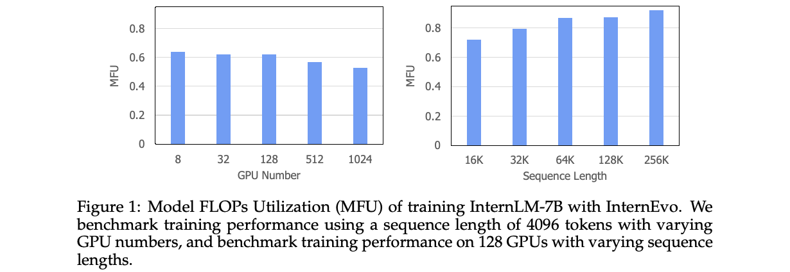
减少通信开销。分布式 LLM 训练中，内存利用率与通信成本存在权衡。首先，缩小通信规模可以有效减少通信成本。这意味着将通信限制在较小的 GPU 组中，可能位于同一节点内，从而降低总体通信成本。基于这一原则，InternEvo 通过一组自适应分片技术应对通信挑战，实现强大的扩展性能（Chen et al., 2024b）。这些技术包括 Full-Replica、Full-Sharding 和 Partial-Sharding，允许模型状态的每个组成部分——参数、gradient 和优化器状态——独立选择最合适的分片方式和设备网格配置。这种灵活性使模型状态在 GPU 基础设施上的分布更加精细。InternEvo 还引入一个优化框架，用于确定最高效的分片因子，目标是在满足 GPU 内存约束的同时最小化通信成本。
通信与计算重叠。为进一步减少通信开销，InternEvo 有策略地协调通信与计算，以优化总体系统性能。使用参数分片时，模型的全部参数分布在多块 GPU 上，以节省 GPU 内存。在每个训练步骤中，每个 micro-batch 的前向和反向传播期间，InternEvo 通过 AllGather 高效预取后续层的完整参数，同时计算当前层。产生的 gradient 通过 ReduceScatter 在参数分片组内同步，然后使用 AllReduce 在参数分片组之间同步。这些通信过程与反向计算巧妙重叠，使训练流水线效率最大化。对于优化器状态分片，GPU 通过 Broadcast 在分片组内广播更新后的参数，此时 InternEvo 使其与下一训练步骤的前向计算有策略地重叠。这些创新的重叠方法有效平衡通信开销与计算执行时间，显著提升总体系统性能。
长序列训练。长序列训练的主要挑战之一，是计算速度与通信开销之间的权衡。InternEvo 将 GPU 内存管理分解为一个分层空间，包含数据、张量、序列和流水线四个并行维度，以及参数、gradient 和优化器状态三个分片维度（Chen et al., 2024a）。我们全面分析每个维度的内存与通信成本，使用执行模拟器确定并实施最优并行策略。最优执行方案可根据训练规模、序列长度、模型大小和 batch 大小自动搜索。借助这一执行方案，InternEvo 能在训练中处理长上下文（最多 100 万 token）。InternEvo 还实现了内存管理技术，以减少长序列训练场景中的常见问题——GPU 内存碎片。它使用内存池进行统一内存管理，并引入一种碎片整理（接第 6 页）
（接第 5 页）
技术，主动合并小内存块以防止内存不足错误。
容错。我们也解决了在 GPU 数据中心高效训练 LLM 的挑战，这些数据中心经常面临硬件故障频繁、并行策略复杂、资源利用不均衡等问题。为应对这些问题，我们深入分析了 GPU 数据中心中为期六个月的 LLM 开发工作负载轨迹（Hu et al., 2024）。这项研究识别了 LLM 与以往深度学习工作负载的差异，并探究资源利用模式和作业故障影响。基于分析，我们提出了两项系统工作：通过 LLM 参与的故障诊断与自动恢复增强容错能力的容错预训练系统，以及及时反馈模型性能的评测任务解耦调度系统。在实现中，我们引入异步保存机制，按预定间隔定期将模型权重和优化器状态归档到分布式文件与对象存储。整个训练过程中，每块 GPU 先将模型状态保存到本地存储，再异步上传到远程分布式存储系统。这个两步过程确保，当系统自动检测到偶发的硬件或网络故障时，只损失极少量训练进度。为优化存储空间，我们系统性地将这些临时模型 checkpoint 从热存储转移到成本更低的冷存储。此外，即使并行配置改变，系统也能够无缝恢复模型训练，为训练流水线提供灵活性和连续性。
交互式训练。InternEvo 的效率也在部署多个 LLM 进行交互式训练的 RLHF 阶段得到成功验证。例如，在 PPO 过程中，我们使用四个同等规模的模型，并训练其中两个；InternEvo 允许每个模型以最优配置执行。为加强多个模型之间的协调，我们基于 InternEvo 和 Ray 开发了一个创新的 RLHF 框架。该框架具有灵活性和可扩展性，能够在大规模场景中有效运行。它可集成各种 LLM 执行引擎，支持不同的算法设计。“对齐”概念的完整说明见第 4 节。
2.2 模型结构
Transformer（Vaswani et al., 2017）由于具有卓越的并行能力，能充分利用 GPU 的算力（Brown et al., 2020; Chowdhery et al., 2023; Zeng et al., 2023），一直是以往 LLM 的主要骨干架构。LLaMA（Touvron et al., 2023a）基于 Transformer 架构，将 LayerNorm（Ba et al., 2016）替换为 RMSNorm（Zhang & Sennrich, 2019），并将激活函数设为 SwiGLU（Shazeer, 2020），提升了训练效率和性能。自 LLaMA（Touvron et al., 2023a）发布以来，社区积极完善围绕 LLaMA 架构构建的生态，包括高效推理（lla, 2023）和算子优化（Dao, 2023）等进展。为确保 InternLM2 能与这一成熟生态无缝衔接，我们和 Falcon（Almazrouei et al., 2023）、Qwen（Bai et al., 2023a）、Baichuan（Yang et al., 2023）、Mistral（Jiang et al., 2023）等知名 LLM 一样，遵循 LLaMA 的结构设计原则。为提高效率，我们合并了 \(W_{k}\)、\(W_{q}\) 和 \(W_{v}\) 矩阵，使预训练阶段加速超过 5%。此外，为更好支持不同的 TP 转换，我们重新配置了矩阵布局。我们不直接堆叠 \(W_{k}\)、\(W_{q}\) 和 \(W_{v}\)，而是在每个头内交错排列这些矩阵，如图 2 所示。这个设计允许沿矩阵最后一个维度拆分或拼接来调整 TP 规模，从而提高模型在不同分布式计算环境中的灵活性。InternLM2 旨在支持超过 32K 的上下文推理，因此（接第 7 页）
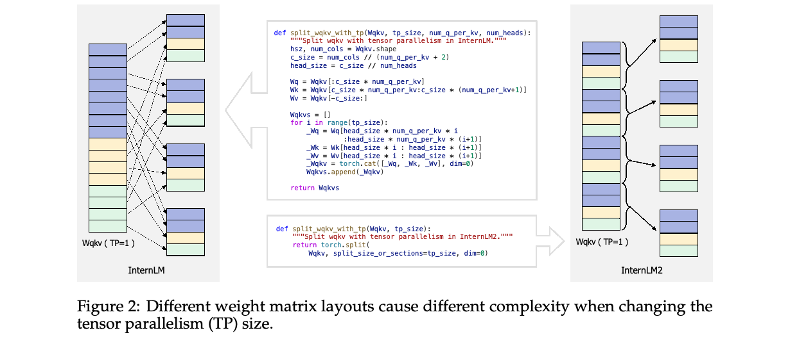
（接第 6 页）
InternLM2 系列模型全部选择 GQA（Ainslie et al., 2023），以便在超长上下文下兼顾高推理速度和低 GPU 内存占用。
3 预训练
本部分介绍预训练数据、预训练设置和三个预训练阶段。
3.1 预训练数据
数据对 LLM 预训练有决定性影响，也带来多方面的挑战，包括处理敏感数据、覆盖全面知识，以及平衡效率与质量。本节介绍我们准备通用领域文本数据、编程语言相关数据和长文本数据的数据处理流水线。
3.1.1 文本数据
我们的预训练文本数据按来源分为网页、论文、专利和书籍。为将这些来源转成预训练数据集，我们首先将所有数据标准化为指定格式，按类型和语言分类，并以 JSON Lines（jsonl）格式存储。然后对所有数据应用基于规则的过滤、数据去重、安全过滤和质量过滤等处理步骤，最终得到丰富、安全、高质量的文本数据集。
数据来源分布。我们按来源对预训练数据集的文档数、数据存储大小和数据字节占比进行了统计分析，如表 1 所示。其中，中英文网页数据占总量的 86.46%，是主要来源。虽然书籍和技术文献（简称 techlit）等其他来源的数据量相对较小，但平均文档长度更长、内容质量相对更高，因此同样重要。
数据处理流水线。本文使用的数据处理流水线见图 3。整个流水线先将不同来源的数据标准化，得到 Format data。随后，使用启发式统计规则过滤数据，得到 Clean data。接着，使用 LSH 方法去重，得到（接第 8 页）
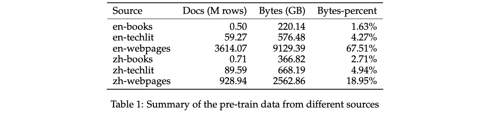
（接第 7 页）
Dedup data。我们再应用复合安全策略过滤数据，得到 Safe data。针对不同来源的数据，我们采用不同的质量过滤策略，最终得到 High-quality pre-training data（高质量预训练数据）。
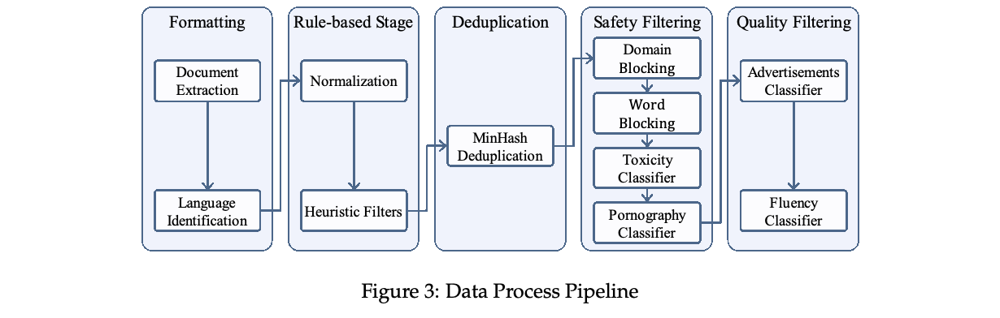
数据格式化。我们以网页数据为例详细介绍数据处理流水线。网页数据主要来自 Common Crawl1。首先，我们解压原始 Warc 格式文件，并使用 Trafilatura（Barbaresi, 2021）解析 HTML 和提取正文。然后，使用 pycld22 库检测正文语言并分类。最后，为数据分配唯一标识符，以 jsonl（JSON lines）格式存储，得到 Format data。
基于规则的阶段。从互联网上随机提取的网页数据往往包含大量低质量数据，如解析错误、格式错误和非自然语言文本。常见做法是设计基于规则的规范化和过滤方法来修改、筛选数据，例如 Gopher（Rae et al., 2021）、C4（Dodge et al., 2021）和 RefinedWeb（Penedo et al., 2023）。基于对数据的观察，我们设计了一系列启发式过滤规则，关注分隔和换行异常、异常字符频率及标点符号分布。应用这些过滤器后，我们得到 Clean data。
去重。互联网上存在大量重复文本，可能对模型训练产生负面影响。因此，我们使用基于 LSH 的方法进行模糊去重。具体而言，我们使用 MinHash 方法（Broder, 1997），在文档的 5-gram 上通过 128 个哈希函数建立签名，并采用 0.7 的去重阈值。我们尽量保留最新数据，即优先保留 CC dumps 编号更大的数据。LSH 去重后，得到 Dedup data。
1 https://commoncrawl.org/
2 https://pypi.org/project/pycld2/
安全过滤。互联网上充斥有害和色情内容，用这些内容训练模型可能损害性能，并增加生成不安全内容的可能性。因此，我们采用综合安全策略，结合“域名屏蔽”“词语屏蔽”“色情分类器”和“有害内容分类器”过滤数据。具体而言，我们建立了包含约 13M 个不安全域名的屏蔽列表，以及包含 36,289 个不安全词语的屏蔽列表，用于初步过滤。鉴于词语屏蔽可能误排除大量数据，我们在编制词语屏蔽列表时采取谨慎做法。
为进一步提高不安全内容的检出率，我们使用 Kaggle 的 “Toxic Comment Classification Challenge” 数据集微调 BERT，得到有害内容分类器。我们从 Dedup data 中采样部分数据，使用 Perspective API3 标注，构建色情分类数据集，再用该数据集微调 BERT，得到色情分类器。最后，使用这两个分类器进行二次过滤，过滤掉得分低于阈值的数据，得到 Safe data。
质量过滤。相比书籍、论文和专利等来源，互联网数据包含大量低质量内容。根据我们的观察，其主要原因有二：1. 互联网上充斥营销广告，通常重复且信息量小。2. 很多网页由文章摘要或产品描述列表构成，提取出的文本难以阅读，缺乏逻辑连贯性。
为过滤这些低质量内容，我们先组织人工标注。对于广告分类任务，要求标注者识别数据是否含有广告内容（整体广告和局部广告都标记为低质量）。对于流畅度分类任务，要求标注者从一致性、噪声、信息量和语法四个维度评分，得到综合流畅度分数。随后，我们用人工标注数据微调 BERT，得到广告分类器和流畅度分类器。最后，使用这两个分类器进行二次过滤，排除得分低于阈值的数据，得到高质量预训练数据。
3.1.2 代码数据
编程是 LLM 的关键技能，支持编码辅助、软件开发、构建使用工具的 agent 等多种下游应用。此外，Groeneveld et al.（2024）指出，用代码数据训练可能增强推理能力，因为代码通常比自然语言结构更清晰、逻辑更严密且更可预测。
数据来源分布。我们从多种来源收集数据，包括直接抓取 GitHub、公开数据集，以及问答论坛、教程网站和 API 文档等编码及编程相关在线资源，统计见图 4。表 2 展示了基于我们训练的评分模型进行的数据质量评估。高质量数据有更高采样权重，可以在预训练阶段多次训练。中等质量数据采用正常采样权重，通常只训练一次。低质量数据被排除；虽然它们占比相对较小，但经验表明，移除这些数据对优化模型性能和确保训练稳定性至关重要。
格式清洗。所有数据都转换为统一的 markdown 格式。不过，极少部分数据仍含损坏的 HTML 或 XML 格式。我们应用一组启发式规则以尽量减少这些情况，但并未在格式净化上投入过多精力。选择 Markdown 是因为它简洁，能最大限度减少格式的 token 开销，并兼容代码与自然语言交错呈现。
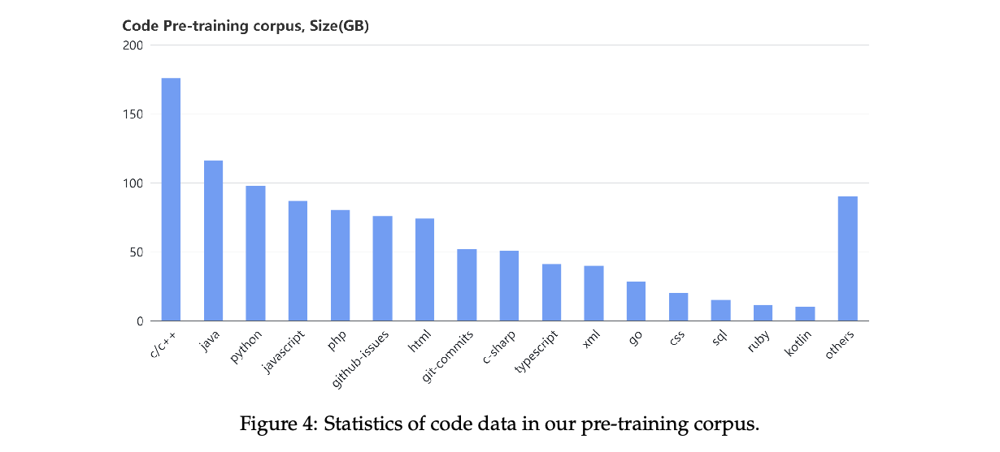
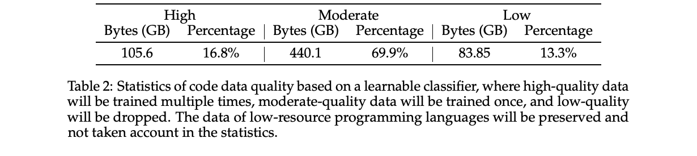
预训练实际使用的格式更加复杂，需要根据依赖关系拼接多个代码文件。主要思路是利用交错数据，这对于教会模型编程至关重要。近期研究也提到了这一点（Guo et al., 2024）。
数据去重。代码数据去重与自然语言处理类似，但分词存在差异，会影响超参数选择。例如，Python 示例使用两个空格、四个空格或制表符表示缩进。常规的空白字符 tokenizer 或专为自然语言设计的 tokenizer，可能错误地将这些样本判为不同数据。我们的认识是，有效的 tokenizer 是应用通用去重策略的必要条件。虽然近期研究探索了段落级或行级细粒度去重，我们仍采用文件级去重，以保持上下文完整性。
质量过滤。质量是 LLM 预训练研究中一个关键但模糊的方面，主要因为难以量化它在不同规模下对模型性能的影响。我们采用混合、多阶段过滤过程，包括基于规则和基于模型的评分器。规则评分器具有启发性且多种多样，但我们发现代码风格并非可靠的质量指标，会将过多代码误判为低质量。对于基于模型的评分，我们评估了几个骨干模型，用约 50,000 个标注样本训练。然而，我们发现评分器评估与人工判断之间的相关性随语言而变化，扩大训练集也没有显著提高评分准确率。因此，只有对于模型预测在人工标注验证集上与人工评估良好一致的语言，我们才使用模型评分。
为获得模型评分器的可靠标注，我们引入迭代标注流程（见图 5），应对代码质量数据定义（接第 11 页）
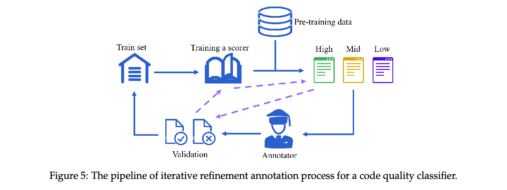
（接第 10 页）
模糊的挑战。即使对人类专家而言，识别哪些代码有助于教会 LLM 也并不容易；例如，一个广受认可的代码仓库，对初学者来说可能过于复杂。我们提出的迭代工作流允许标注者验证模型预测，并据此完善指导准则。为提高标注效率，我们只要求标注者检查评分器以高置信度标为高质量和低质量的样本。此外，每轮迭代都有自动验证过程，确保先前标注的样本被评分器正确分类，图中以黄色虚线表示。实践中，我们通过三轮迭代确定最终评分模型。
依赖排序。InternLM2 的训练上下文窗口扩展到 32,000 token，可以利用代码仓库的完整上下文。按扩展名过滤代码文件和去重等先前处理步骤，可能破坏仓库结构。因此，我们首先重新组合来自同一仓库的代码文件，并进行依赖排序，确定拼接顺序。由此，代码仓库被视为一个包含代码块的长 markdown 文件，使模型能够学习跨文件依赖。
我们使用正则表达式检测各种编程语言中的 “import” 关系，并通过拓扑排序决定文件拼接顺序。实际排列可能打破文件夹边界，形成多个子文件夹中文件交错的序列。markdown 和其他文档等非代码文件，位于同一子文件夹第一个代码文件之前。对于祖先与后代之间有多条路径，或 “import” 关系图中存在环等特殊情况，前者取较短路径，后者按字母顺序确定起点。识别 “import” 关系的一个技巧，是解析批量导入，如 __init__.py 或 #include xx.h。这些文件可能导入大量未使用的依赖，因此我们应用启发式规则细化检测，确保在更细粒度上准确识别并处理 “import” 关系。
3.1.3 长上下文数据
处理超长上下文（> 32K token）的能力，在 LLM 研究中越来越热门，它扩展并促进了书籍摘要、长期对话以及复杂推理步骤任务等应用。预训练数据是扩展模型上下文窗口的关键因素之一。我们遵循 Lv et al.（2024）介绍的长文本预训练数据准备流程，该研究还包含额外实验和讨论。下文只概述 InternLM2 所采用的数据准备方法。
数据过滤流水线。我们的数据处理流水线旨在过滤低质量长文本，包含三个阶段：a）长度筛选，基于规则选择超过 32K 字节的数据样本；b）统计过滤，利用统计特征识别并移除异常数据；c）PPL 过滤，利用 PPL 差异评估文本片段之间的连贯性，过滤具有干扰性上下文的样本。注意，长上下文训练使用的所有数据都是标准预训练语料的子集，这意味着长上下文数据在预训练中至少会被学习两次。
统计过滤。我们使用多种词汇和语言特征构建统计过滤器。不符合既定规则的样本从预训练语料中排除。完整过滤器列表见 Lv et al.（2024）。一个值得注意的过滤特征，是是否出现连接词及其他暗示语篇结构的词，例如 “Especially”“Formally” 等。设计这些过滤器的总体原则，是过滤无意义数据，而非挑选质量最高的数据。统计过滤对长文本特别有效，因为其统计特征远比短文本稳定。例如，20-token 文本可能无法提供可靠统计信息，但 32K-token 文本的统计特征分布清晰得多。
PPL 过滤。PPL 通常被视为文本序列概率 P(X) 的估计量；我们稍作调整，用它估计两个文本片段之间的条件概率 \(P(S_{2}|S_{1})\)，其中 \(S_{1}\) 位于 \(S_{2}\) 之前。当 \(S_{1}\) 与 \(S_{2}\) 强相关时，条件概率应高于单独估计 \(S_{2}\) 的概率，也意味着 PPL 差为负。相反，如果概率向反方向变化，说明 \(S_{1}\) 是干扰性上下文，应从预训练语料中移除。理想情况下，增加上下文不应削弱后续文本的可预测性。然而，我们在不当拼接的文本中观察到了例外，例如 HTML 解析失败、随机社交媒体片段，以及复杂布局来源中识别错误造成的其他情况。注意，我们只根据 PPL 差异而非 PPL 本身过滤数据，这可大幅缓解估计器自身（计算 PPL 所用模型）引入的偏差。Wettig et al.（2024）和 Sachdeva et al.（2024）讨论了 PPL 估计器的偏差。
阈值选择。选择合适阈值是数据过滤中具有挑战但必不可少的一环；因为我们构建了许多过滤器，这一挑战更为严重。关于阈值设置，我们有两条经验：
为各领域分别定制阈值，而不是寻求通用方案。例如，连接词统计过滤器不适用于通常没有连接词的长代码数据。同样，教材、研究论文、小说和专利各有特点。统一阈值很可能误判大量数据。不同语言的阈值设置也遵循同样逻辑，因此我们为每个领域独立调整阈值。
使用验证集简化流程，只关注边界样本。与学习型特征提取器或评分器不同，我们的统计和 PPL 过滤器在同一领域中产生平滑结果。这使我们可以关注阈值附近的样本，只需判断应降低还是提高阈值，从而简化调整。Lv et al.（2024）展示了数据簇及具体过滤器的分数，说明所提出过滤器的可解释性。
图 6 展示了应用所有过滤器前后的数据分布。整个过滤过程排除了大量网页（Common Crawl）和专利数据，而保留了大部分书籍与论文数据。
3.2 预训练设置
本部分介绍分词和预训练超参数。
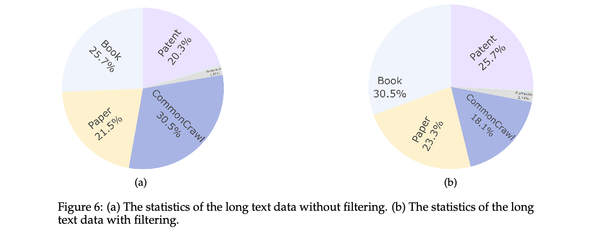
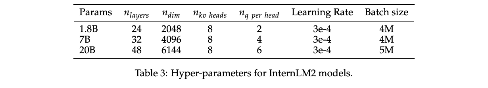
3.2.1 分词
我们选择 GPT-4 的分词方法，因为它压缩多种文本内容的效率非常出色。我们主要参考 cl100k 词表4，该词表主要包括英文和编程语言 token，共有 100,256 个条目，其中中文 token 较少，不到 3,000 个。为优化 InternLM 处理中文文本时的压缩率，同时保持总词表规模小于 100,000，我们精心选择 cl100k 词表中的前 60,004 个 token，并与 32,397 个中文 token 合并。此外，我们加入 147 个备用 token，使最终词表大小为 256 的倍数，从而便于高效训练。
3.2.2 预训练超参数
基本超参数列于表 3。训练时使用 AdamW（Loshchilov & Hutter, 2019）优化模型，\(\beta _{1} = 0.9\)，\(\beta _{2} = 0.95\)，\(\epsilon =\) 1e−8，weight decay = 0.1。我们使用余弦学习率衰减，将学习率衰减至最大值的 10%。
3.3 预训练阶段
1.8B、7B 和 20B 模型预训练所用的 token 总数为 2.0T–2.6T，预训练过程分为三个不同阶段。第一阶段使用长度不超过 4k 的预训练语料。第二阶段包含 50% 长度不超过 32k 的预训练语料。第三阶段使用特定能力增强数据。每个阶段都混合英文、中文和代码数据。
3.3.1 4k 上下文训练
约 90% 的训练步骤使用长度不超过 4096 token 的数据。如果数据长度超过 4096，我们会强制截断，并将剩余部分也用于训练。
3.3.2 长上下文训练
扩展上下文窗口显著提升了 LLM 在 RAG（Gao et al., 2023）和 agent（Xi et al., 2023）等多种应用中的表现。受长上下文训练最新进展（Rozière et al., 2023; Xiong et al., 2023; Liu et al., 2023b）启发，InternLM2 先使用 4K 上下文语料训练，随后转向 32K 上下文语料。我们并非只使用 32k 语料，仍有 50% 的数据短于 4096 token。这个长上下文训练阶段约占总步骤的 9%。为适应更长序列，我们将 RoPE 的基数从 50,000 调整为 1,000,000，确保更有效的长上下文位置编码（Liu et al., 2023b）。由于 InternEvo（Chen et al., 2024a）和 flash attention（Dao, 2023）良好的可扩展性，上下文窗口从 4K 改为 32K 时，训练速度只下降 40%。
3.3.3 特定能力增强训练
推理、数学问题求解和知识记忆是人们期望 LLM 具备的关键能力。然而，预训练中与能力相关的高质量数据稀疏分布于整个语料中，使模型难以精通这些能力。Qwen（Bai et al., 2023a）、GLM-130B（Zeng et al., 2023）、Nemotron-4（Parmar et al., 2024）等先前研究，尝试在预训练阶段加入指令数据或高质量数据以增强这些能力。对于 InternLM2，我们收集了一个增强数据集，精心混合高质量检索数据和 huggingface datasets 平台5上的各类开源数据。该数据集总计收集了 240 亿 token，语料细节见表 4。我们过滤测试集相关数据，并进行第 5.4 节所述的污染测试。为使模型充分适应这些数据，我们采用较小的学习率和 batch 大小。
增强训练之后，InternLM2 在编程、推理、问答和考试方面的表现显著提升，详细评测结果见后续评测章节。为帮助研究社区，我们发布增强训练前后的 checkpoint，分别命名为 InternLM2-{size}-Base 和 InternLM2-{size}。
4 对齐
预训练阶段赋予 LLM 解决各种任务所需的基础能力和知识。我们进一步微调 LLM，充分激发其能力，并引导它成为有帮助且无害的 AI 助手。这个阶段，也（接第 15 页）
（接第 14 页）
通常称为“对齐”，一般包含 SFT 和 RLHF 两个阶段。SFT 期间，我们使用高质量指令数据微调模型，使其遵循多样化的人类指令（第 4.1 节）。随后提出 COnditional OnLine RLHF，采用新颖的条件 RM，协调不同类型的人类偏好（例如多步推理准确性、有帮助性和无害性），并进行三轮在线 RLHF 以减少 reward hacking（第 4.2 节）。对齐阶段，我们在 SFT 和 RLHF 中使用长上下文预训练数据，保留 LLM 的长上下文能力（第 4.3 节）。我们还介绍改善 LLM 工具使用能力的实践（第 4.4 节）。
4.1 SFT
SFT 阶段使用含 1000 万条指令实例的数据集，这些实例经过筛选，以确保有帮助性和无害性。数据集覆盖多种主题，包括通用对话、NLP 任务、数学问题、代码生成和函数调用等。图 7 展示 SFT 数据主题的详细分布。为灵活表示这些多样任务，我们将数据样本转为 ChatML（Cha）格式。7B 和 20B 模型都使用 AdamW 优化器训练一个 epoch，初始学习率为 4e-5。
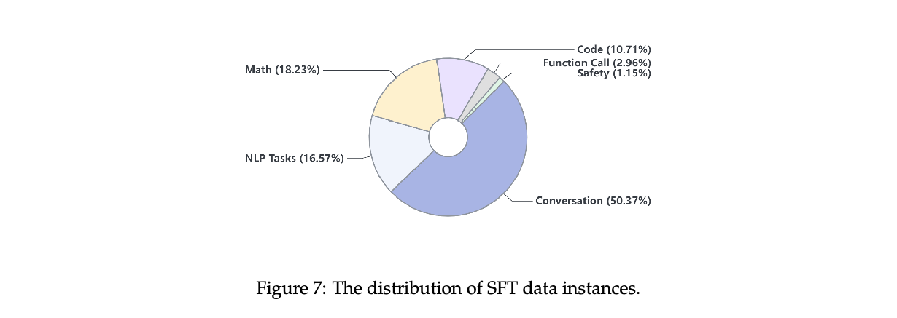
4.2 COOL RLHF
RLHF（Christiano et al., 2017; Ouyang et al., 2022）是 LLM 领域的一种创新方法。通过引入人类反馈，RLHF 创建作为人类偏好代理的 RM，为 LLM 通过 PPO（Schulman et al., 2017）学习提供奖励信号。此方法使模型能够更好地理解并执行难以通过传统方法定义的任务。
尽管 RLHF 取得了成果，其实际应用仍存在一些问题。首先是偏好冲突。例如，开发对话系统时，我们期望它提供有用信息（有帮助），同时不产生有害或不当内容（无害）。然而，实践中这两种偏好往往无法同时满足，因为在某些情况下提供有用信息可能涉及敏感或高风险内容。现有 RLHF 方法（Touvron et al., 2023b; Dai et al., 2023; Wu et al., 2023）通常依赖多个偏好模型评分，这在训练流水线中引入更多模型，增加计算成本并降低训练速度。其次，RLHF 面临 reward hacking 问题，尤其当规模增加、策略更强大时（Manheim & Garrabrant, 2018; Gao et al., 2022），模型可能学会通过捷径“欺骗”奖励系统以获取高分，（接第 16 页）
（接第 15 页）
而不是学到真正期望的行为。这使模型以非预期方式最大化奖励，显著影响 LLM 的有效性和可靠性。
为解决这些问题，我们提出条件在线 RLHF（COOL RLHF）。COOL RLHF 首先引入条件奖励机制来协调多样偏好，使 RM 能够基于特定条件动态分配对不同偏好的 attention，从而最优地整合多种偏好。此外，COOL RLHF 采用多轮在线 RLHF 策略，使 LLM 能及时适应新的人类反馈，减少 reward hacking 的发生。
4.2.1 条件 RM
条件 RM 为以往 RLHF 偏好建模方法固有的挑战提供了一种创新解决方案。传统方法通常依赖多个偏好模型解决不同领域间的偏好冲突（图 8(a)）；条件 RM 则针对不同偏好引入不同系统提示词，在单个 RM 中有效建模多样偏好。
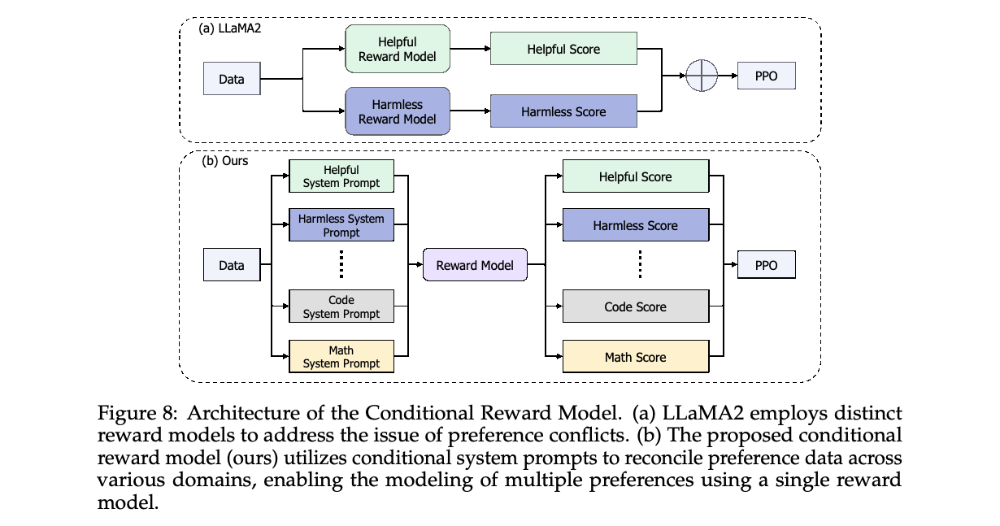
具体而言，如图 8(b) 所示，条件 RM 使用不同系统提示词，无缝融合不同领域的数据。RM 由已经学会遵循多样人类指令的 SFT 模型初始化，因此我们也让 RM 遵循不同系统提示词，以适应不同场景的多样偏好。在条件 RM 中，系统提示词不仅是输入的组成部分，也是引导奖励分数在不同场景下符合特定偏好的关键工具。这样的整合使我们能够在统一 RM 中管理矛盾且复杂的人类偏好，而不牺牲准确性。
数据组成。条件 RM 的训练涉及一个大规模数据集，覆盖对话、文章写作、诗歌、摘要、编程、数学和格式化输出等领域，含多达 240 万组二元偏好对。这个全面的数据集确保模型具有广泛适应性，并增强其在更广泛、更复杂场景下进行强化学习的能力。因此，通过条件系统提示词方法，奖励（接第 17 页）
（接第 16 页）
模型能够响应复杂的人类需求，在 PPO 阶段更精细地控制奖励分数。
损失函数。此外，为降低数据集中简单与困难样本不均衡的影响，我们受 Focal Loss（Lin et al., 2017）启发，修改原始排序损失函数（Burges et al., 2005）。我们在排序损失中加入难度衰减系数，使困难样本的损失更大、简单样本的损失更小，防止在大量简单样本上过拟合。焦点排序损失定义为：
其中 \(P_{i,j} = \sigma (r_{i} - r_{j})\) 表示奖励 \(r_{i}\) 大于奖励 \(r_{j}\) 的概率。难度衰减系数仅在模型正确预测训练样本偏好，即 \(P_{i,j} > 0.5\) 时生效，否则等于 1。\(\gamma\) 是调节难度衰减比率的超参数，我们默认设为 2。同时，为确保 RM 在不同训练中输出分数的稳定性和一致性，我们对奖励分数引入对数障碍惩罚，将分数分布约束在 −5 到 5 的范围内，定义为：
这一约束至关重要，因为它避免了不同 RM 的分数分布变化可能造成的、在 PPO 阶段修改额外奖励相关超参数的需要。总的来说，RM 损失函数为：
参数 \(\lambda\) 是平衡 \(L_{ranking}\) 与 \(L_{penalty}\) 贡献的权重系数。根据初步实验结果的观察，我们将默认值设为 0.02。这些改进提升了 RM 的稳健性和一致性，尤其适用于简单与困难样本不均衡的数据集。
训练细节。实验中，RM 规模与 PPO 使用的 actor 模型规模一致。遵循 InstructGPT（Ouyang et al., 2022）的方法，我们用 SFT 模型权重初始化 RM，将输出层改为随机初始化的一维线性映射层。Batch 构建策略固定每批偏好数据总长度为 16384 token，而不限制偏好对数量，以避免填充数据造成训练低效。最大上下文长度设为 8192。每个序列末尾追加一个特殊 token，将其输出值作为奖励分数。优化器采用 AdamW，学习率按余弦退火从 1e-5 降至 5e-6，权重衰减设为 0.01。为防止过拟合，模型训练一个 epoch。
4.2.2 在线 RLHF
获得条件 RM 后，我们进行 PPO，使 LLM 与 RM 所建模的人类偏好对齐（Ouyang et al., 2022）。为应对 PPO 阶段的 reward hacking，我们引入在线 RLHF 方法，分为两条不同路径：快速路径用于即时、针对性的改进，慢速路径用于 RM 的长期、全面完善。两条路径互补，提供自适应框架，缓解 reward hacking，提升通过人类反馈训练的 LLM 的性能和可靠性。
快速路径。在线 RLHF 的快速路径着重通过有针对性的补丁，迅速识别和纠正 reward hacking 事件，提高 RM 可靠性。随着 PPO 训练推进，LLM 被鼓励趋向高奖励区域，通常会暴露更多容易检测的 reward hacking 场景。每轮 RLHF 后识别投机模式，我们比较当前轮早期和后期 PPO 模型产生的响应，构建突出这些模式的偏好对。在训练中加入 20–100 组这样的偏好对，就足以显著抑制 RM 对应的投机模式。这个过程能针对新出现的投机行为快速修复 RM，提高其可靠性和对预期结果的遵循程度。
慢速路径。与聚焦修复 reward hacking 的快速路径相比，慢速路径遵循先前工作（Bai et al., 2022），覆盖最新、最强模型的响应，旨在普遍提高 RM 的性能上限，尤其是其在高奖励区域的可靠性和稳健性。为此，我们将不同训练阶段模型（包括 SFT 模型、早期 PPO 模型和后期 PPO 模型）生成的响应组成成对比较，再交由专业人工标注者标注偏好。
这个过程对 RM 的完善更加细致、全面，但需要大量人工标注时间。为提高在线 RLHF 效率，我们只使用实验开始时所有先前模型累积的人类偏好（由于人工标注耗时，这可能不包括当前轮模型响应的偏好）。通过根据人类反馈持续更新模型，慢速路径确保 RM 随着人类偏好的复杂性和细微差别共同演进。
实现。我们实现在线 RLHF 时进行了三轮完善。在这些循环中，通过快速路径收集了数千条偏好补丁和在线偏好数据来更新 RM，并使用此前模型响应的所有现有人类偏好数据。每轮在线 RLHF 都提供了宝贵认识，使我们能够动态调整和完善 RM，提高人类反馈训练语言模型的总体性能和可靠性。
4.2.3 PPO 训练细节
RL 对齐阶段采用标准 PPO 算法，并做了若干调整，使训练过程更加稳定。框架涉及四个模型：actor 模型、critic 模型、参考模型和 RM。训练时，后两个模型冻结，只有前两个模型参与训练。值得注意的是，所有模型规模相同，确保其处理和生成数据的容量一致。我们以约 400 次迭代遍历约 200k 条多样化查询，并选择验证集上表现最佳的 checkpoint 发布。
模型初始化。按照常见做法，我们用 SFT 模型权重初始化参考模型和 actor 模型。critic 模型由 RM 初始化（不含线性头），并进行 50 次迭代的预训练，期间冻结 actor 模型。该阶段对稳定训练初期的价值估计至关重要，避免不稳定价值的潜在不良影响。我们进行消融研究，比较使用 RM 与 SFT 模型初始化 critic 的效果，如图 9 所示。结果表明，由 RM 初始化的 critic 在 PPO 最初几次迭代中损失更大，但约 20 次迭代后，始终表现出更低损失，并使 actor 获得更高奖励。我们推测，初期较高的损失可能揭示奖励建模和 critic 建模任务的根本差异。后续较低损失可能归因于（接第 19 页）
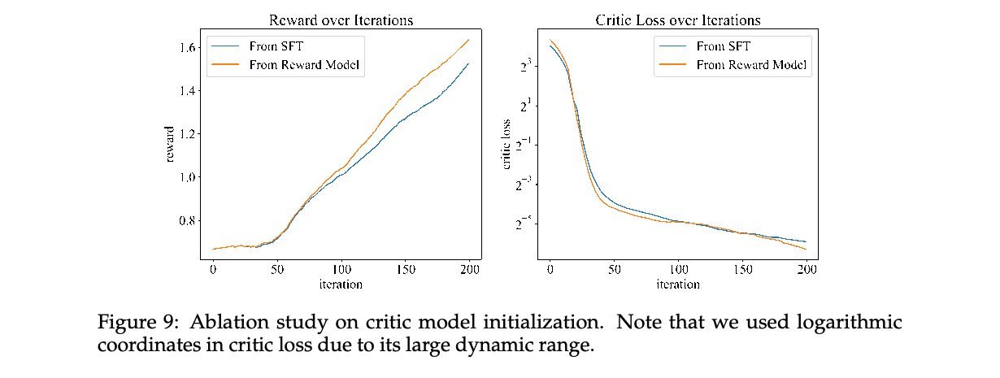
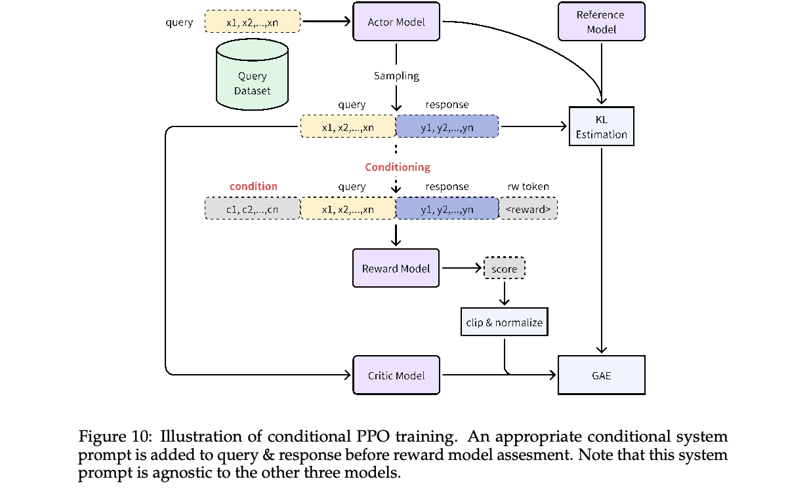
（接第 18 页）
对世界知识更一致的内部理解，以及对评估原则更好的掌握。
条件奖励。如前所述，RM 训练为适应各种条件。因此，对于不同领域的查询，在计算奖励分数前，我们为每个采样响应前置合适的条件系统提示词，如图 10 所示。这一做法确保模型响应在上下文中符合不同领域的多样需求。
预训练 gradient。为缓解 PPO 阶段灾难性遗忘的风险，我们遵循 InstructGPT 方法加入预训练损失。预训练损失系数设为 0.5，预训练数据量约为 PPO 训练数据量的 50%（接第 20 页）。
（接第 19 页）
这一补充有助于保留初始训练阶段获得的知识，确保模型通过 PPO 适应新反馈并学习时，仍保有基础能力和知识库。
超参数。KL 散度系数设为 0.01。actor 和 critic 模型的学习率分别为 1e-6 和 5e-6。我们发现，在本实验中更大的 PPO \(\lambda\) 值带来更高奖励，因此将其设为 0.99。我们采用稍保守的采样策略，top_p = 0.9，以平衡采样多样性和收敛速度。不同于某些常规方法，我们不使用价值损失裁剪或优势归一化。尽管 RL 涉及众多技巧，训练仍非常稳定，部分得益于我们细致的在线 RLHF 工作。
4.3 长上下文微调
为在微调后保留 LLM 长上下文能力，我们受在 SFT 中采用长上下文预训练语料的先前工作（Xiong et al., 2023）启发，在 SFT 和 RLHF 中继续使用长上下文预训练数据。具体使用两类数据：一类是书籍长上下文数据，另一类来自 GitHub 仓库，通过下述特定方式拼接得到。
为增强 InternLM2 数据分析能力，我们选用 DS-1000（Lai et al., 2023）中的代码仓库作为核心仓库，包括 Pandas、Numpy、Tensorflow、Scipy、Scikit-learn、PyTorch 和 Matplotlib。随后，在 GitHub 上搜索引用这些核心仓库且拥有超过 10,000 stars 的仓库，执行与预训练相同的过滤和数据清洗。对每个仓库，我们先按深度优先方式排列获取的原始数据，同时生成简要描述文件内容的必要提示词，如图 11 所示。接着依次拼接处理后的数据，直到长度达到 32k。实验表明，长上下文代码数据不仅改善 LLM 的长上下文能力，也提升代码能力。
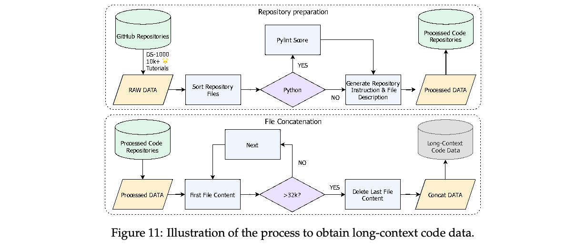
4.4 工具增强 LLM
通用工具调用。我们采用修改后的 ChatML 格式，通过引入 “environment” 角色实现通用工具调用。这种修改在聊天场景中保持相同格式，但在使用 agent 时给模型更清晰的信号。此外，我们定义两个特定关键词，支持 AI agent 的不同用途，即代码解释器（<|interpreter|>）和外部插件（<|plugin|>）。这使我们能够（接第 21 页）
（接第 20 页）
采用统一流式格式，处理各类插件扩展和 AI 环境，同时兼容通用聊天。图 17 给出了流式聊天格式的具体示例。为充分激发 InternLM2 的 agent 能力，我们将 agent 语料与聊天领域对齐，并沿语言模型的基础能力进行解耦，以开展细粒度训练，详见 Agent-FLAN（Chen et al., 2024c）。
代码解释器。我们还增强 InternLM2-Chat 通过代码解释器解决数学问题的能力：将 Python 代码解释器视为一种特殊工具，采用工具学习中描述的相同模式。我们采用 RICO 策略，以迭代式困难样例挖掘构建数据，详见 InternLM-Math（Ying et al., 2024）。
5 评测与分析
5.1 概述
本节全面评测和分析语言模型在不同领域与任务上的表现。评测分为两个主要类别：（a）下游任务；（b）对齐。每类进一步拆为具体子任务，详细了解模型优势与弱点。最后，我们讨论语言模型潜在的数据污染问题及其对性能和可靠性的影响。除明确说明外，所有评测均使用 OpenCompass（Contributors, 2023b）6。
5.2 下游任务表现
我们首先详细介绍多个 NLP 任务的评测协议和性能指标。我们介绍数据集，解释实验设置，然后展示结果并深入分析，与最先进方法比较以展示模型有效性。性能评估从六个关键维度展开：（1）综合考试，（2）语言与知识，（3）推理与数学，（4）多编程语言编码，（5）长上下文建模，（6）工具使用。
5.2.1 综合考试
我们在一系列考试相关数据集上开展基准测试，包括：
MMLU（Hendrycks et al., 2020）：含 57 个子任务的多项选择题数据集，覆盖人文、社会科学、STEM 等主题。报告 5-shot 结果。
CMMLU（Li et al., 2023a）：专门面向中国的多项选择题数据集，含 67 个子任务。除人文、社会科学、STEM 等外，还包括许多中国特有任务。报告 5-shot 结果。
C-Eval（Huang et al., 2023）：含 52 个子任务和 4 个难度级别的多项选择题数据集，覆盖人文、社会科学、STEM 等主题。报告 5-shot 结果。
AGIEval（Zhong et al., 2023）：以人为中心的基准，含多项选择题和开放式问题。问题来自 20 项面向普通人类考生的官方、公开、高标准入学与资格考试，报告 0-shot 结果。
GAOKAO-Bench（Zhang et al., 2023）：包含 2010–2022 年中国高考的数据集，含主观题和客观题。我们只评测客观题数据集，并报告 0-shot 结果。
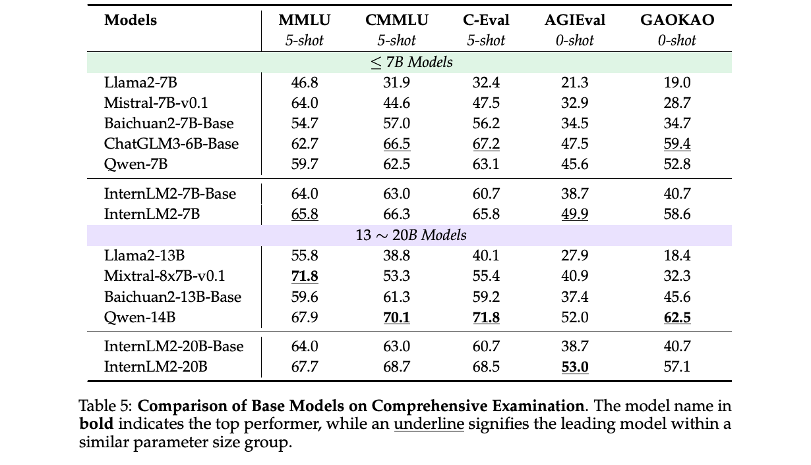
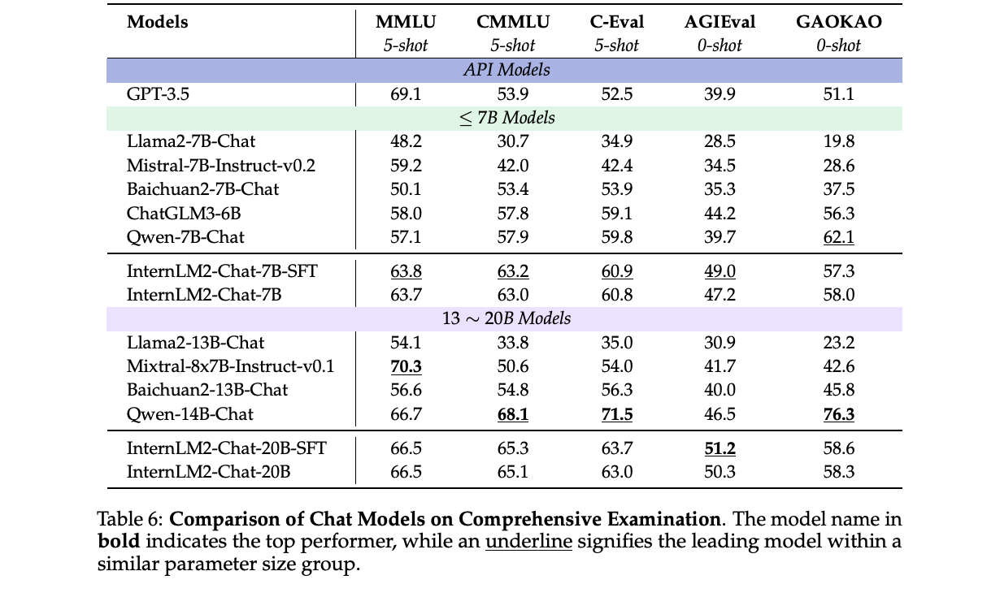
评测结果
基础模型结果见表 5，对话模型结果见表 6。
对于基础模型，InternLM2 系列在参数量相近的模型中表现良好。在 7B 和 20B 规模下，InternLM2 相比（接第 23 页）
（接第 22 页）
InternLM2-Base 有显著提升，证明在通用领域数据和领域增强语料上预训练，有利于综合考试。对于专门为人类设计的考试中收集的 AGIEval 和 GAOKAO 任务，InternLM2 相对 InternLM2-Base 的提升比其他数据集更大。
对于对话模型，InternLM2 系列也在参数量相近的模型中表现突出。比较 InternLM2-Chat-7B-SFT 和 InternLM2-Chat-7B 可见，COOL RLHF 对综合考试表现影响很小。
5.2.2 语言与知识
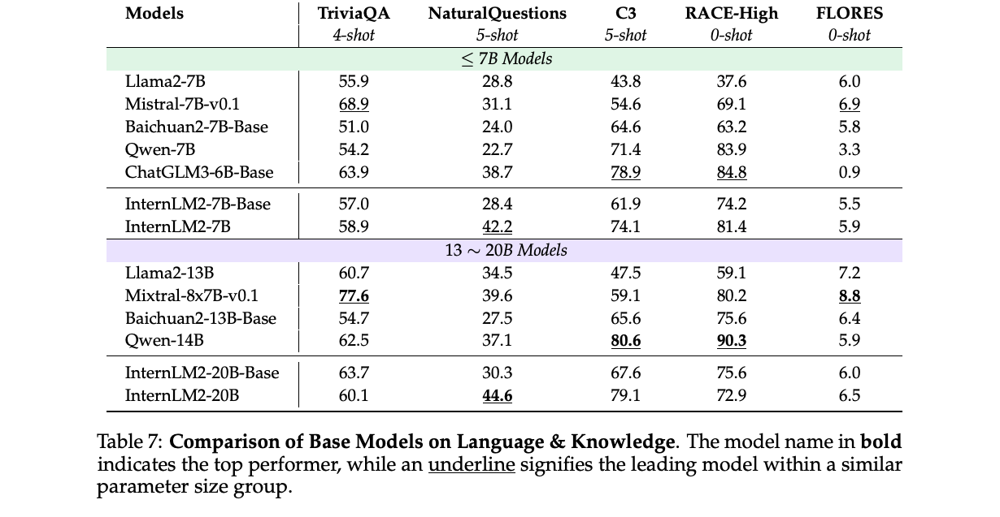
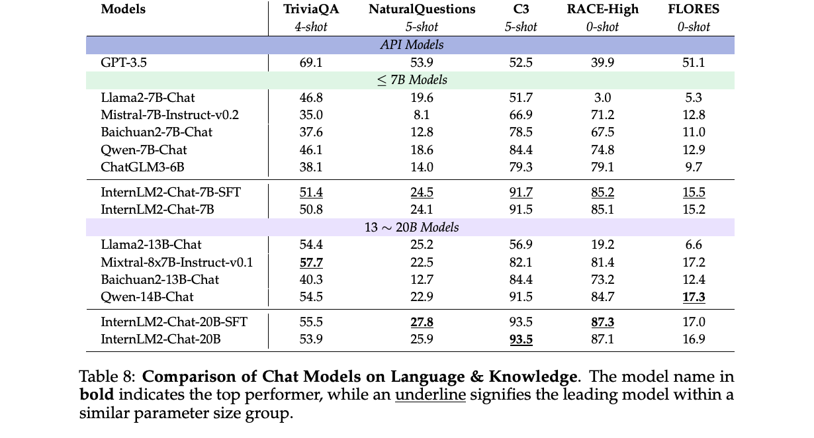
TriviaQA（Joshi et al., 2017）：含阅读理解与开放域问答的数据集。每个问题平均有 6 个可能答案。我们使用开放域问答子集，并报告 0-shot 结果。
NaturalQuestions（Kwiatkowski et al., 2019）：问题来自用户、答案由专家验证的问答数据集。报告 0-shot 结果。
C3（Sun et al., 2020）：自由形式的多项选择中文机器阅读理解数据集。报告 0-shot 结果。
RACE（Lai et al., 2017）：含面向中国 12–18 岁初高中学生的英语阅读理解考题的阅读理解数据集。我们使用高中子集，报告 0-shot 结果。
FLORES（Team et al., 2022）：从 Wikipedia 提取的翻译数据集，覆盖 101 种语言。我们评测英文与其他 100 种语言之间的双向翻译结果。每对翻译任务选择 100 个样本，使用 BLEU 评估。报告 8-shot 结果。
译注：本页正文所述 TriviaQA、NaturalQuestions、C3、FLORES 的 shot 数与表 7、8 表头不一致；两处均保留原文。
评测结果
基础模型结果见表 7，对话模型结果见表 8。得益于严格筛选的高质量训练语料，InternLM2 在语言理解和知识应用任务上展现了显著竞争优势。因此，在许多高度依赖稳健语言理解和广泛知识的实际应用中，它是出色的选择。
5.2.3 推理与数学
本节主要验证 InternLM2 的推理和数学表现，关注以下两类测试集：
推理数据集：
- WinoGrande（Sakaguchi et al., 2020）：含 44,000 道各有两个选项的选择题的常识推理数据集。要求模型根据情境，为描述文本中的代词选择适当的实体词。
- HellaSwag（Zellers et al., 2019）：用于评估常识自然语言推断的挑战性数据集，含 70,000 道选择题。每题给出一个情境和四个可能结果，要求选择最合理结论。
- BigBench Hard（BBH）（Suzgun et al., 2023）：LLM 测试集合，从 BIG-Bench 提取 23 个挑战性任务；在当时，这些任务上语言模型尚未超越人类表现。
数学数据集：
- GSM8K-Test（Cobbe et al., 2021）：含约 1,300 道小学水平情境数学题。解题涉及 2–8 步，主要使用基本算术运算（加、减、乘、除）完成一系列基本计算，得到最终答案。
- MATH（Hendrycks et al., 2021）：含 12,500 道具有挑战性的高中竞赛数学题，覆盖从代数到微积分的多个领域。每题都有完整的逐步解答。
- TheoremQA（Chen et al., 2023a）：STEM 定理驱动问答数据集，含 800 组问答，覆盖数学、电气工程与计算机科学、物理及金融中的 350 多个定理。它测试 LLM 应用定理解决大学水平难题的局限。
- MathBench（Anonymous, 2024b）：MathBench 含 3709 道题，分多个阶段，挑战逐步增加。每阶段包含双语理论题与应用题，每题都有精确的三级标签，标明其细粒度知识点。
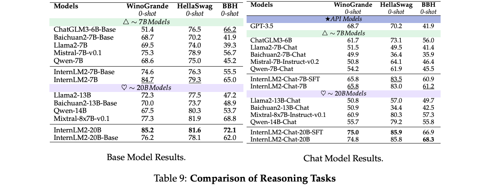
在推理和数学问题评测中，选择题主要使用零样本方式。对于 GSM8k、MATH 以及 MathBench 开放式部分等开放式问题，我们主要采用少样本方法，以增强模型遵循指令的能力，便于提取答案。为确保评测结果一致，对于基础模型，我们主要使用 PPL 评测来评估选择题。
推理。推理能力反映模型理解、处理和操作抽象概念的能力，对于涉及复杂问题求解和决策的任务至关重要。我们在表 9 中分别从 Base 和 Chat 两个方面比较、展示 InternLM2 的表现。
评测结果
基础模型：在约 7B 规模的模型中，InternLM2-7B 在除 BBH 外的大多数数据集上表现出色。尤其是 WinoGrande（84.7），比 Mistral-7B-v0.1（75.3）高 9.4 分，仅落后同系列 InternLM2-20B（85.2）不到一分，显示其强大的常识推理能力。在所有受测基础模型中，InternLM2-20B 获得最佳总体表现。相比 InternLM2-20B-Base，加入领域增强知识明显改善了常识推理，InternLM2-20B 在受测推理数据集上的平均提升为 10.4%。
对话模型：在对话模型推理方面，InternLM2 在 7B 和 13–20B 规模均继续领先。RL 模型和 SFT 模型在已显著增强的推理能力基础上效果相近。其中，7B 参数模型甚至在三个测试集上超过 Mixtral-8x7B-Instruct-v0.1 和 Qwen-14B-Chat 等大多数 13–20B 模型。InternLM2-Chat-20B 在推理测试集多个方面显著超过 GPT-3.5，例如 HellaSwag 的情境推理（↑ 15.6）和 BBH 的高难度综合推理（↑ 26.4），展示 InternLM2 在较小规模模型中出色的推理能力。
数学。数学能力是模型认知和计算能力的组成部分。表 10 展示基础模型在（接第 26 页）
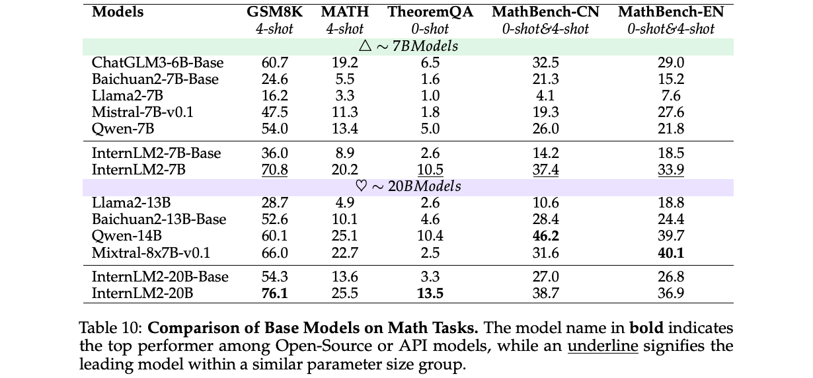
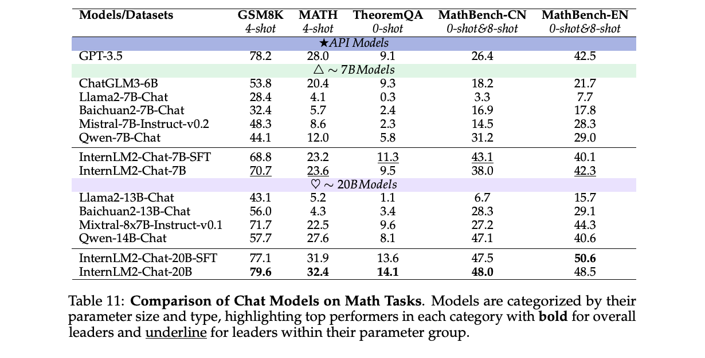
（接第 25 页）
多个不同难度数学评测集上的表现。7B 参数规模下，InternLM2-7B 处于领先地位。具体而言，在基础算术 GSM8k 数据集上，InternLM2-7B（70.8）显著优于其他模型，比 ChatGLM3-6B-Base（60.7）高 10.1 个百分点，且相比 InternLM2-7B-Base（36.0）几乎翻倍，证明加入领域增强数据后，InternLM2-7B 具有强大的基础算术能力。对于 MATH 等更复杂的问题求解任务，以及 TheoremQA 中的定理证明，InternLM2-7B 虽在 MATH 上稍落后，但获得的分数（10.5）甚至超过更大的 Qwen-14B-Base（10.4），说明它不仅擅长计算任务，也擅长复杂定理证明。在双语数学数据集 MathBench 中，InternLM2 的中英文表现都很出色。
在 13–20B 参数规模下，InternLM2-20B 在基础算术和定理证明上超过所有受测 Base 模型，而 Qwen-14B-Base 在问题求解任务以及 MathBench 中英文测试上表现突出。
对话模型。对于表 11 中的 Chat 模型，InternLM2-Chat 在 7B 和 20B 参数规模下，在基础算术 GSM8K、复杂应用数学 MATH 和理论问题 TheoremQA 上均展现最佳表现。尤其是经过 COOL RLHF 的 InternLM2-Chat-20B，全面领先各项指标，超过 API 模型 GPT-3.5 和 MoE 模型 Mixtral-8x7B-Instruct-v0.1。在 MathBench 双语测试中，InternLM2-Chat-20B 同样表现优秀。
5.2.4 编程
Python 编程任务
- HumanEval：HumanEval（Chen et al., 2021）是广泛认可的代码生成模型评测基准数据集。它包含 164 道精心编写的编程任务，每题由 Python 函数及提供上下文和规范的 docstring 构成。该数据集采用人工编写的代码，对评估 LLM 生成或补全程序的能力发挥关键作用。
- MBPP：MBPP（Austin et al., 2021）含 974 道入门程序员能够解决的编程任务，从简单数字操作，到定义特定整数序列等需要外部知识的复杂问题。我们使用 MBPP 的 sanitized 版本，仅包括作者人工验证过的数据子集。
多编程语言编码任务
- HumanEval-X：HumanEval-X（Zheng et al., 2023b）是原始 HumanEval 的多语言扩展，旨在评估代码生成模型处理多种编程语言的能力。它包含 164 道人工编写的编程题，每题翻译为五种主要语言：C++、Java、JavaScript、Go 和 Python，共 820 组问题—解答对，支持代码生成与代码翻译任务。HumanEval-X 通过测试用例验证生成代码正确性，评估模型生成功能正确的代码，以及不同语言间翻译代码的能力。此基准帮助更全面了解预训练多语言代码生成模型及其在实际编程任务中的潜在应用。
为评估 InternLM2 的编程能力，我们使用广泛认可的 MBPP（Austin et al., 2021）和 HumanEval（Chen et al., 2021）开展一系列实验。此外，为衡量模型的多编程语言代码生成能力，评测扩展至 MBPP 的中文版本 MBPP-CN，以及原始 HumanEval 的多语言扩展 HumanEval-X。
如图 13 所示，InternLM2 系列取得领先表现，尤其在 HumanEval、MBPP 和 MBPP-CN 上，InternLM2-Chat-20B 比之前最先进结果高出 10% 以上，凸显系列模型在代码生成任务中的出色能力。此外，InternLM2-Chat-20B 在 MBPP-CN 上相比 InternLM2-Chat-7B 有明显提升，但在 HumanEval-X 上略有下降。这可能源于 InternLM2-Chat-20B 针对中文精细微调，牺牲了其他语言的有效性。
译注：此处“图 13”为原文引用；编程评测结果实际列于表 12、13，图 13 是 Needle-in-a-Haystack 测试。
5.2.5 增强训练前后的表现
通过前述结果可清楚看到，经过特定能力增强训练的 InternLM2 始终优于对应的未增强模型。该阶段前后模型性能的整体比较见图 12，各项能力分数由多个评测集的平均值计算。
编程：HumanEval 和 MBPP。
推理：MATH、GSM8k、SummEdits（Laban et al., 2023）和 BBH。
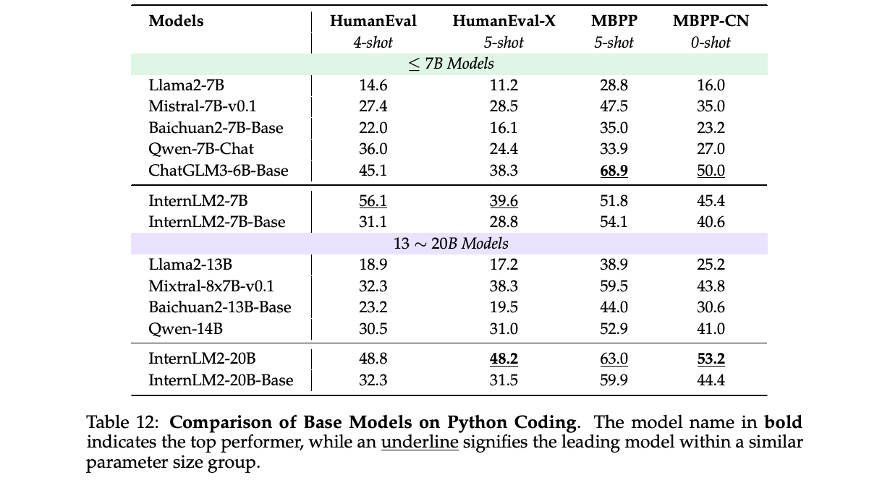
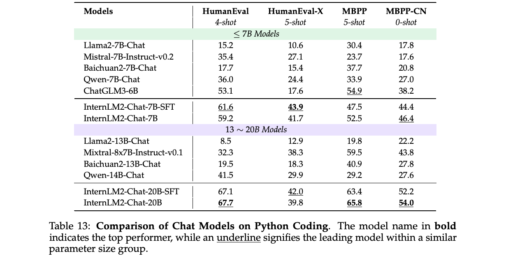
问答：HellaSwag、PIQA（Bisk et al., 2020）、WinoGrande、OpenBookQA（Mihaylov et al., 2018）、NaturalQuestions 和 TriviaQA。
考试：MMLU、AGIEval 和 C-Eval。
显然，这些能力有显著提升。此外，表 14 比较增强训练前后的基础模型再进行 SFT 后的表现。能力维度遵循 OpenCompass7 的分类。可以（接第 29 页）
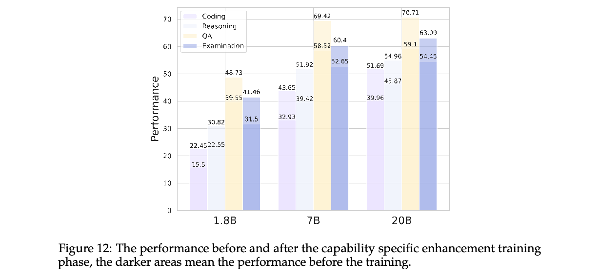
（接第 28 页）
观察到，经过特定能力增强后训练的 SFT 模型，在各能力维度表现更好。本报告其他部分的 SFT 表现，基于增强训练之前的基础模型。
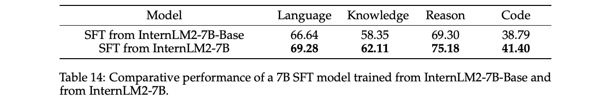
5.2.6 长上下文建模
长上下文理解与推理。我们主要通过 L-Eval（An et al., 2023）和 LongBench（Bai et al., 2023b）两个基准评估 InternLM2 的长上下文建模能力。
L-Eval。L-Eval 是含 18 个子任务8的长上下文基准，包括法律、经济和技术等领域文本。它包含 411 篇文档和超过 2000 个测试用例，平均文档长度为 7217 个词。其子任务分为两大类：5 个封闭式任务和 13 个开放式任务类别。封闭式任务使用基于精确匹配的准确率评估，开放式任务采用 Rouge 分数。
LongBench。LongBench 是含 21 个子任务、共 4750 个测试用例的长上下文基准，也是首个双语长上下文基准；英文文本平均长度为 6711 个词，中文文本平均长度为 13386 个字符。21 个子任务分为 6 类，更全面地评估模型各方面能力。
评测结果。InternLM2 的长上下文基准结果见表 15。所有 InternLM2 变体都在两个基准上展现出强大的长上下文建模表现。InternLM2-Chat-20B-SFT 在 L-Eval 上表现最佳，并大幅领先同类模型。在 LongBench 上，InternLM2-Chat-7B-SFT 在 6 类子任务中的 4 类（接第 30 页）
8 我们采用 L-Eval 第一版，对应 https://arxiv.org/abs/2307.11088v1。
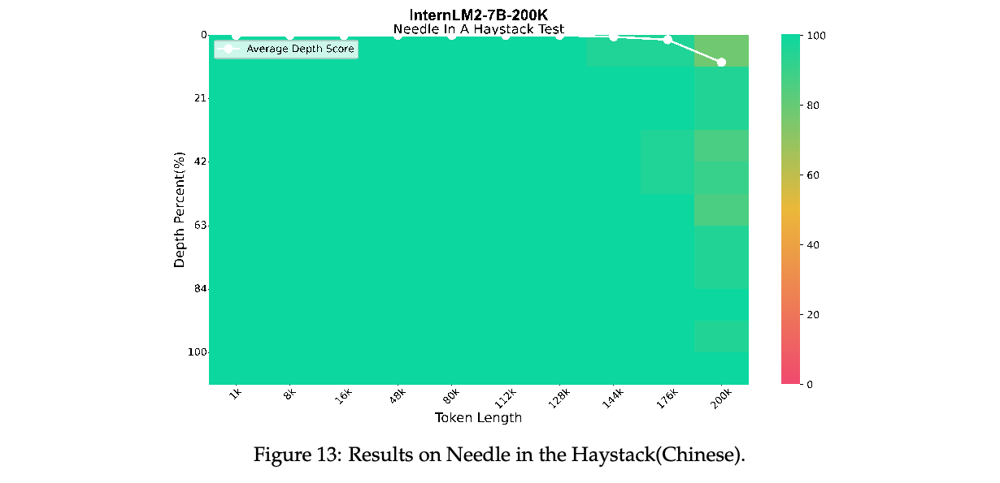
（接第 29 页）
上优于其他 \(\le 7\mathrm{B}\) 模型。其总体得分为 48.1，仅略低于 ChatGLM3-6B 的 48.4。同时，我们注意到 InternLM2 的不同参数规模并未带来明显的长上下文性能差异，这有待进一步研究。
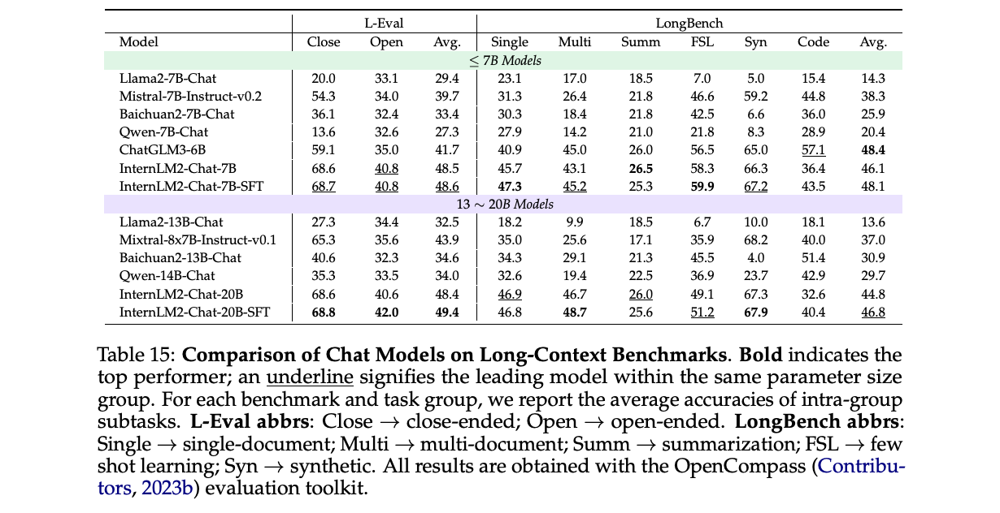
Needle-in-a-Haystack。“Needle-in-the-Haystack” 是一个单针检索任务，旨在测试 LLM 回忆单条关键信息的能力。方法是在目标长度9的“草堆”文本中不同位置插入一条关键信息，再在提示词末尾询问模型有关该信息的问题。它精确可视化 LLM 在不同长度长文本、不同位置上的回忆能力。我们设计了一个中文“草堆”，（接第 31 页）
9 文本 token 长度使用 GPT-4 tokenizer 计算。
（接第 30 页）
遵循原始思路，使用 Wei et al.（2023）发布的 Skywork/ChineseDomainModelingEval 数据集，确保中文文本来源的多样性和质量。该数据集覆盖从金融到科技的广泛领域，提供高质量、最新的中文文章，为评估不同模型处理领域特定长文本的能力提供稳定基准。本实验使用 LMDeploy10（Contributors, 2023a）推理引擎加速推理。图 13 的结果有效展示 InternLM2 的长上下文建模能力。
5.2.7 工具使用
外部工具和 API 可显著增强 LLM 解决复杂现实问题的能力，这是广泛认可的（Qin et al., 2023a;b; Schick et al., 2023）。为分析 InternLM2 的工具使用能力，我们在 GSM8K（Cobbe et al., 2021）、Math（Hendrycks et al., 2021）、近期提出的 MathBench（Anonymous, 2024b）、T-Eval（Chen et al., 2023b），以及 CIBench 的模板子集（Anonymous, 2024a）等基准上开展实验，全部使用 ReAct 协议（Yao et al., 2023），让 LLM 交替生成思考过程与执行动作。MathBench 包含 3709 道题，覆盖小学到高中数学概念，可全面评估 LLM 解数学题能力。T-Eval（Chen et al., 2023b）含经人工验证的高质量问题指令及相应逐步解答，从六个维度衡量 LLM 使用 Google Search 和 Gaode Map 等日常工具的能力。我们团队开发的 CIBench 使用交互式 Jupyter notebooks 模拟真实数据分析场景，包含多个连续任务，覆盖 Pandas、Numpy 和 Pytorch 等最常用 Python 数据分析模块，可全面评估 LLM 的综合数据分析能力。
GSM8K、MATH 和 MathBench。我们使用外部代码解释器并遵循 ReAct 协议，评估 LLM 解决编程和数学问题的能力。如图 14 所示，使用代码解释器时表现有显著改善，尤其在 MATH 数据集上提升非常明显。
如图 15 所示，在近期提出的 MathBench 上，使用代码解释器在多数情况下提升 InternLM2 表现；少量下降可能源于解释器使用不当。此外，InternLM2-20B-Chat 在知识部分、InternLM2-7B-Chat 在应用部分有明显提升。这些差异可能来自多种因素，包括各自训练数据集组成的不同。
T-Eval 和 CIBench。如图 16 所示，InternLM2 在各基准上始终表现优于或可比于现有模型。具体而言，相同规模模型比较中，InternLM2-Chat-7B 在 T-Eval 和 CIBench 上最佳。InternLM2-Chat-20B 在 T-Eval 上结果有竞争力，在 CIBench 上获得最高分。此外，InternLM2 系列中文表现优秀，展示了多语言能力。
译注：此处“图 16”为原文引用；T-Eval 和 CIBench 结果实际列于表 16，图 16 为 CompassArena 结果。
5.3 对齐表现
虽然预训练和 SFT 改善 LLM 的客观能力，其回答风格可能仍不符合人类偏好，需要 RLHF 进一步增强对齐。因此，评估对齐能力对于确定 LLM 是否真正满足人类需求至关重要。
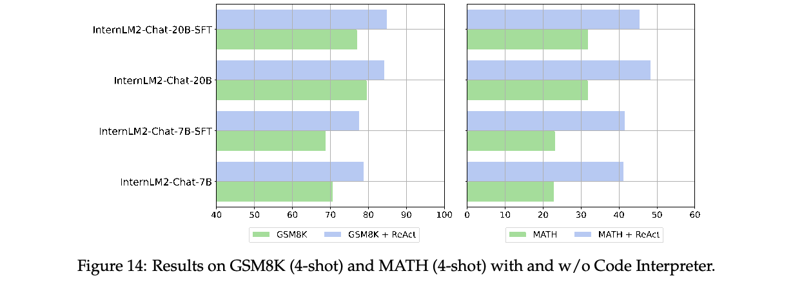
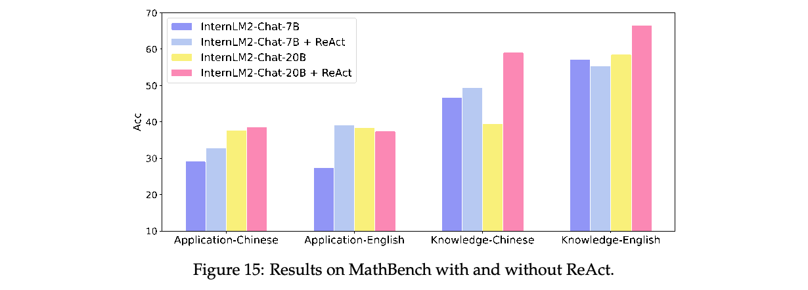
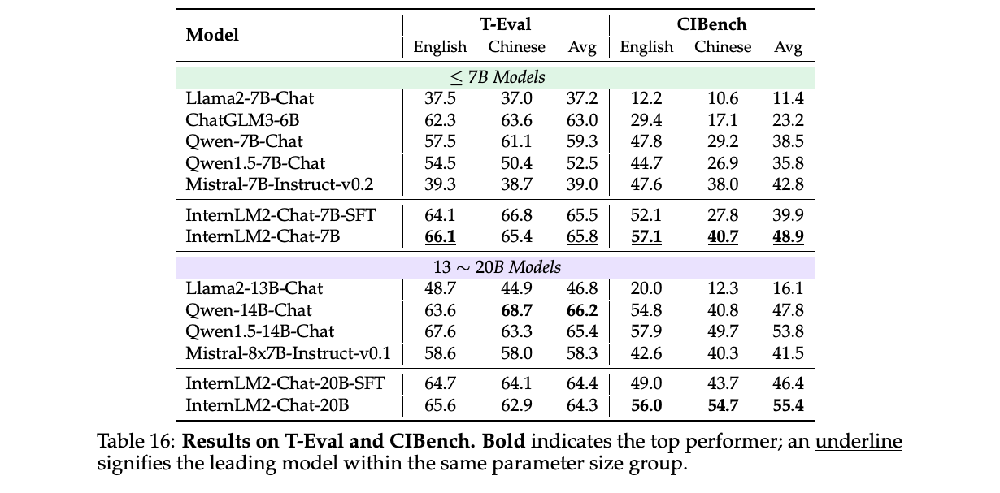
本节在几个常用的主观对齐数据集上评测 InternLM2，比较 SFT 和 RLHF 模型表现。表 17 可见，InternLM2 在对齐任务上的总体性能在多个基准中达到最先进或接近最先进（接第 33 页）
（接第 32 页）
水平，展示了 InternLM2 系列的主观输出与人类偏好的高度一致性。下文分别详述各数据集表现。此外，各数据集主观对齐任务使用的提示词模板见附录。
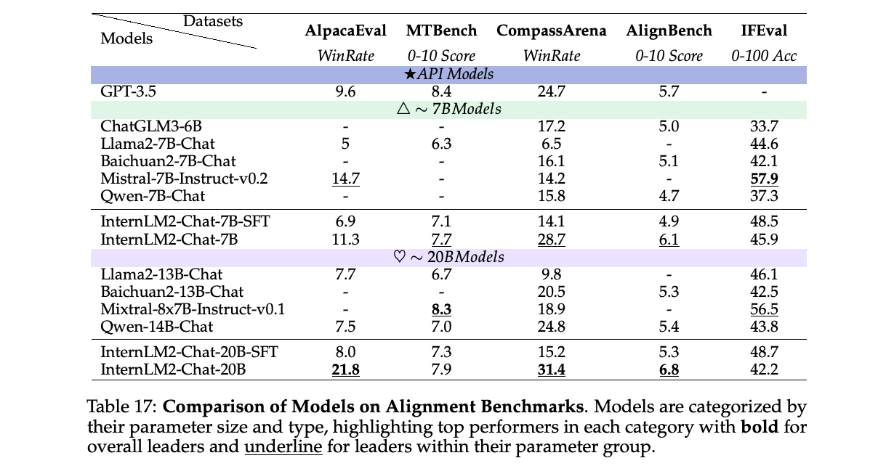
5.3.1 英文主观评测
AlpacaEval。AlpacaEval（Li et al., 2023b）是含 805 道问题的单轮问答数据集，主要通过对抗式评测，评估模型响应对人类的帮助程度，反映与人类意图的对齐。AlpacaEval(v2) 设置一个基线模型，用 GPT4-Turbo 作为裁判，比较基线与待评测模型答案，选择更符合人类偏好的模型并计算胜率。AlpacaEval(v2) 不直接收集裁判模型响应，而是使用 logit 概率统计分析裁判模型偏好，再将这些偏好作为权重因子计算加权胜率。如表 17 所示，InternLM2-20B 获得 21.8 的胜率，是所比较模型中最高的 SOTA 结果，展示其优秀对齐表现。此外，表中 RLHF 模型胜率优于 SFT 模型，说明对齐策略的有效性。
MTBench。MTBench（Zheng et al., 2023a）是双轮对话数据集，含 80 个问题，覆盖推理、角色扮演、数学、编程、写作、人文、STEM 和信息提取八个维度。每个维度有 10 题，每题进行两轮提问。首先测试模型回答基本问题的能力，随后要求它遵循额外的具体指令完善先前响应。裁判模型按 1–10 分评分。如表 17 所示，InternLM2 的 7B 和 20B 版本分别获得领先的 7.7 和 7.9 分，展现可靠的多轮对话能力。
5.3.2 中文主观评测
CompassArena。CompassArena 含 520 个中文问题，涵盖知识、语言、数学、推理和创造力。与 AlpacaEval 类似，它用 GPT4-Turbo 判断两个模型的胜率，通过交换模型顺序的双盲测试减轻位置偏差。如表 17 所示，InternLM2（接第 34 页）
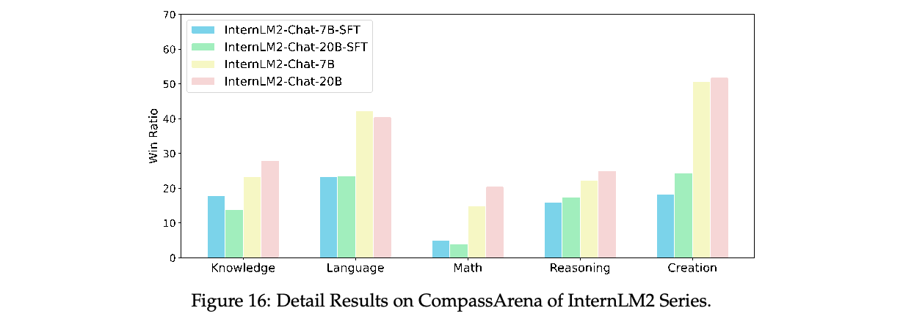
（接第 33 页）
在 7B（28.7）和 20B（31.4）版本中都取得最高胜率。注意，InternLM2 的 7B 与 20B 版本性能差距相对较小。然而，相比 SFT 模型，InternLM2 的 RLHF 模型性能显著提升。这说明 RLHF 策略大幅增强了 InternLM2 与人类偏好的对齐，而不只是增大模型规模。此外，图 16 的分类结果显示 InternLM2 系列拥有特别强的中文创造力和语言能力，胜率可与 GPT4-Turbo 相媲美。
AlignBench。AlignBench（Liu et al., 2023a）是中文主观数据集，含 683 组问答，分为基础语言能力、高级中文理解、任务导向角色扮演等八个类别，覆盖物理、历史、音乐和法律等场景。数据集使用内部裁判模型 CritiqueLLM（Ke et al., 2023）评测。CritiqueLLM 对每题多个维度给出 1–10 分，再给出最终分数。表 17 展示 CritiqueLLM 给出的最终分数，表 18 展示各类别细分分数。如表 17 所示，InternLM2 的 7B 和 20B 版本分别达到 SOTA 分数 6.1 和 6.8，超过 GPT-3.5 的 5.7。此外，两个版本经 RLHF 后都显著优于 SFT 模型，说明我们 RLHF 策略能有效改善与人类偏好的对齐。细分分数分析揭示数学和推理能力仍有提升空间；但 InternLM2 在问答和角色扮演任务上表现突出，主观性能强劲。
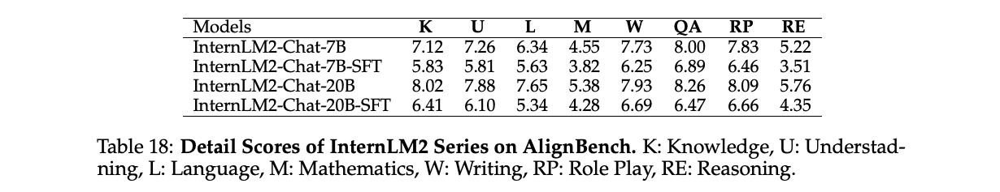
5.3.3 指令遵循评测
IFEval。IFEval（Zhou et al., 2023）旨在测试模型指令遵循能力，要求响应符合字母大小写限制、关键词限制等特定模式。IFEval 包含 25 类不同指令，构建了 541 个遵循指令的问题，并使用基于规则的评测，评估每题模型响应的正确性。通过不同统计方法，IFEval 提供四类准确率：提示词级严格、提示词级宽松、实例级严格，（接第 35 页）
（接第 34 页）
以及实例级宽松。表 17 展示这四种分数的平均结果。虽然 Llama2 和 Mistral 等以英语为主的模型通常在 IFEval 上优于以中文为主的模型，InternLM2 在 7B（48.5）和 13–20B（48.7）组中分别排名第二和第三。这表明，尽管指令遵循任务有挑战，InternLM2 在相似规模模型中仍居领先地位。
5.3.4 条件 RM 消融研究
为验证条件系统提示词的影响，我们比较在不同领域异质混合数据上训练的 RM，使用与不使用条件系统提示词的表现。如表 19 所示，缺少系统提示词会使多个公开数据集的准确率显著下降，包括有帮助和无害的对话（Bai et al., 2022）、内容摘要（Stiennon et al., 2020）、数学问题（Lightman et al., 2023）和 Reddit 回复（Ethayarajh et al., 2022）等场景。相反，加入系统提示词会明显提高这些领域的准确率。
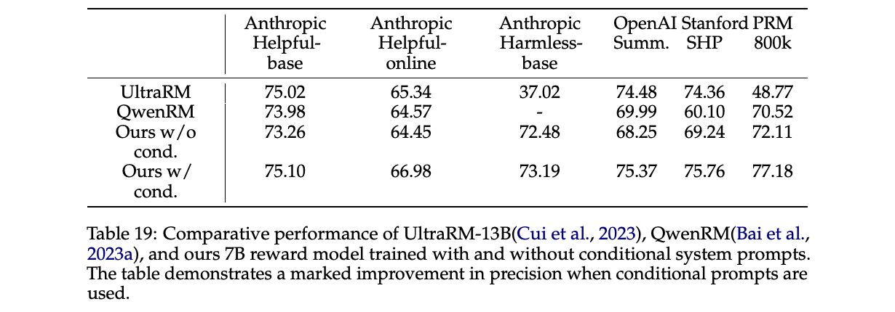
5.4 关于数据污染的讨论
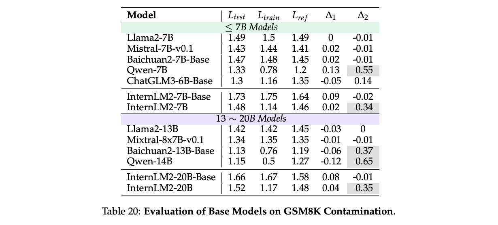
我们评估几个基础模型在 GSM8K 数据集样本（每个样本由问题与答案拼接构成）上的语言建模（LM）损失，结果见表 20。对于每个 LLM，我们比较训练集（\(L_{train}\)）、测试（接第 36 页）
（接第 35 页）
集（\(L_{test}\)），以及专门整理的参考集（\(L_{ref}\)）上的 LM 损失，参考集由 GPT-4 生成，用于模仿 GSM8K。我们还报告两个关键指标：\(\Delta _{1} = L_{test} - L_{ref}\)，用作 LLM 训练期间潜在测试数据泄漏的指标，即数值越低越可能泄漏；\(\Delta _{2} = L_{test} - L_{train}\)，衡量在数据集训练部分上的过拟合程度。\(\Delta _{2}\) 越高，意味着过度拟合。两个指标的 outlier 都以灰色突出。
6 结论
本报告介绍 InternLM2 LLM，它在主观和客观评测中均表现出色。InternLM2 在超过 2T 的高质量预训练语料上训练，覆盖 1.8B、7B 和 20B 规模，适合多种场景。为更好支持长上下文，它使用 GQA 降低推理成本，并额外接受最长 32k 上下文训练。除开源模型本身，我们也公开不同训练阶段的 checkpoint，方便未来研究。
除开源模型外，我们详细介绍 InternLM2 的训练方法，包括训练框架、预训练文本数据、预训练代码数据、预训练长文本数据和对齐数据。此外，为解决 RLHF 过程中遇到的偏好冲突，我们提出条件在线 RLHF 来协调各种偏好。这些信息可为准备预训练数据、更有效训练更大模型提供参考。
参考文献
以下提供文献中文标题，并保留原始作者、标题及出版信息以便检索。跨页条目按原始页码接续。
聊天标记语言
chat markup language. https://github.com/MicrosoftDocs/azure-docs/blob/main/articles/ai-services/openai/includes/chat-markup-language.md. Accessed: 2024-02- 06.
llama.cpp：将 Facebook 的 LLaMA 模型移植到 C/C++
llama.cpp: Port of facebook’s llama model in c/c++. https://github.com/ggerganov/llama.cpp, 2023.
GQA：从多头 checkpoint 训练通用多查询 Transformer 模型
Joshua Ainslie, James Lee-Thorp, Michiel de Jong, Yury Zemlyanskiy, Federico Lebro´ n, and Sumit Sanghai. GQA: training generalized multi-query transformer models from multi-head checkpoints. In Houda Bouamor, Juan Pino, and Kalika Bali (eds.), Proceedings of the 2023 Conference on Empirical Methods in Natural Language Processing, EMNLP 2023, Singapore, December 6-10, 2023, pp. 4895–4901. Association for Computational Linguistics, 2023. URL https://aclanthology.org/2023.emnlp-main.298.
Falcon 开放语言模型系列
Ebtesam Almazrouei, Hamza Alobeidli, Abdulaziz Alshamsi, Alessandro Cappelli, Ruxan- dra Cojocaru, Me´rouane Debbah, E´ tienne Goffinet, Daniel Hesslow, Julien Launay, Quentin Malartic, Daniele Mazzotta, Badreddine Noune, Baptiste Pannier, and Guil- herme Penedo. The falcon series of open language models. CoRR, abs/2311.16867, 2023. doi: 10.48550/ARXIV.2311.16867. URL https://doi.org/10.48550/arXiv.2311.16867.
L-Eval：建立长上下文语言模型的标准化评测
Chenxin An, Shansan Gong, Ming Zhong, Mukai Li, Jun Zhang, Lingpeng Kong, and Xipeng Qiu. L-eval: Instituting standardized evaluation for long context language models. CoRR, abs/2307.11088, 2023. doi: 10.48550/ARXIV.2307.11088. URL https://doi.org/10.48550/arXiv.2307.11088.
CIBench：通过代码解释器插件评测你的 LLM
Anonymous. Cibench: Evaluating your llms with a code interpreter plugin. In Openreview, 2024a. URL https://openreview.net/forum?id=O8jmCw5puG.
MathBench：通过分层数学基准评测 LLM 的理论与应用能力
Anonymous. Mathbench: Evaluating the theory and application proficiency of llms with a hierarchical mathematics benchmark. In Openreview, 2024b. URL https://openreview.net/forum?id=4vRO48RwVG.
利用 LLM 进行程序合成
Jacob Austin, Augustus Odena, Maxwell Nye, Maarten Bosma, Henryk Michalewski, David Dohan, Ellen Jiang, Carrie Cai, Michael Terry, Quoc Le, et al. Program synthesis with large language models. arXiv preprint arXiv:2108.07732, 2021.
参考文献（续）
层归一化
Lei Jimmy Ba, Jamie Ryan Kiros, and Geoffrey E. Hinton. Layer normalization. CoRR, abs/1607.06450, 2016. URL http://arxiv.org/abs/1607.06450.
Qwen 技术报告
Jinze Bai, Shuai Bai, Yunfei Chu, Zeyu Cui, Kai Dang, Xiaodong Deng, Yang Fan, Wenbin Ge, Yu Han, Fei Huang, Binyuan Hui, Luo Ji, Mei Li, Junyang Lin, Runji Lin, Dayiheng Liu, Gao Liu, Chengqiang Lu, Keming Lu, Jianxin Ma, Rui Men, Xingzhang Ren, Xuancheng Ren, Chuanqi Tan, Sinan Tan, Jianhong Tu, Peng Wang, Shijie Wang, Wei Wang, Sheng- guang Wu, Benfeng Xu, Jin Xu, An Yang, Hao Yang, Jian Yang, Shusheng Yang, Yang Yao, Bowen Yu, Hongyi Yuan, Zheng Yuan, Jianwei Zhang, Xingxuan Zhang, Yichang Zhang, Zhenru Zhang, Chang Zhou, Jingren Zhou, Xiaohuan Zhou, and Tianhang Zhu. Qwen technical report. CoRR, abs/2309.16609, 2023a. doi: 10.48550/ARXIV.2309.16609. URL https://doi.org/10.48550/arXiv.2309.16609.
通过 RLHF 训练有帮助且无害的助手
Yuntao Bai, Andy Jones, Kamal Ndousse, Amanda Askell, Anna Chen, Nova DasSarma, Dawn Drain, Stanislav Fort, Deep Ganguli, Tom Henighan, Nicholas Joseph, Saurav Kadavath, Jackson Kernion, Tom Conerly, Sheer El-Showk, Nelson Elhage, Zac Hatfield- Dodds, Danny Hernandez, Tristan Hume, Scott Johnston, Shauna Kravec, Liane Lovitt, Neel Nanda, Catherine Olsson, Dario Amodei, Tom Brown, Jack Clark, Sam McCandlish, Chris Olah, Ben Mann, and Jared Kaplan. Training a helpful and harmless assistant with reinforcement learning from human feedback, 2022.
LongBench：用于长上下文理解的双语多任务基准
Yushi Bai, Xin Lv, Jiajie Zhang, Hongchang Lyu, Jiankai Tang, Zhidian Huang, Zhengxiao Du, Xiao Liu, Aohan Zeng, Lei Hou, Yuxiao Dong, Jie Tang, and Juanzi Li. Longbench: A bilingual, multitask benchmark for long context understanding. CoRR, abs/2308.14508, 2023b. doi: 10.48550/ARXIV.2308.14508. URL https://doi.org/10.48550/arXiv.2308.14508.
Trafilatura：用于文本发现与提取的网页抓取库和命令行工具
Adrien Barbaresi. Trafilatura: A web scraping library and command-line tool for text discovery and extraction. In Heng Ji, Jong C. Park, and Rui Xia (eds.), Proceedings of the Joint Conference of the 59th Annual Meeting of the Association for Computational Linguistics and the 11th International Joint Conference on Natural Language Processing, ACL 2021 - System Demonstrations, Online, August 1-6, 2021, pp. 122–131. Association for Computational Linguistics, 2021. doi: 10.18653/V1/2021.ACL-DEMO.15. URL https://doi.org/10.18653/v1/2021.acl-demo.15.
DeepSeek LLM：以长期主义扩展开源语言模型
Xiao Bi, Deli Chen, Guanting Chen, Shanhuang Chen, Damai Dai, Chengqi Deng, Honghui Ding, Kai Dong, Qiushi Du, Zhe Fu, Huazuo Gao, Kaige Gao, Wenjun Gao, Ruiqi Ge, Kang Guan, Daya Guo, Jianzhong Guo, Guangbo Hao, Zhewen Hao, Ying He, Wenjie Hu, Panpan Huang, Erhang Li, Guowei Li, Jiashi Li, Yao Li, Y. K. Li, Wenfeng Liang, Fangyun Lin, Alex X. Liu, Bo Liu, Wen Liu, Xiaodong Liu, Xin Liu, Yiyuan Liu, Haoyu Lu, Shanghao Lu, Fuli Luo, Shirong Ma, Xiaotao Nie, Tian Pei, Yishi Piao, Junjie Qiu, Hui Qu, Tongzheng Ren, Zehui Ren, Chong Ruan, Zhangli Sha, Zhihong Shao, Junxiao Song, Xuecheng Su, Jingxiang Sun, Yaofeng Sun, Minghui Tang, Bingxuan Wang, Peiyi Wang, Shiyu Wang, Yaohui Wang, Yongji Wang, Tong Wu, Y. Wu, Xin Xie, Zhenda Xie, Ziwei Xie, Yiliang Xiong, Hanwei Xu, R. X. Xu, Yanhong Xu, Dejian Yang, Yuxiang You, Shuiping Yu, Xingkai Yu, B. Zhang, Haowei Zhang, Lecong Zhang, Liyue Zhang, Mingchuan Zhang, Minghua Zhang, Wentao Zhang, Yichao Zhang, Chenggang Zhao, Yao Zhao, Shangyan Zhou, Shunfeng Zhou, Qihao Zhu, and Yuheng Zou. Deepseek LLM: scaling open-source language models with longtermism. CoRR, abs/2401.02954, 2024. doi: 10.48550/ARXIV.2401.02954. URL https://doi.org/10.48550/arXiv.2401.02954.
PIQA：自然语言中的物理常识推理
Yonatan Bisk, Rowan Zellers, Ronan Le Bras, Jianfeng Gao, and Yejin Choi. PIQA: reasoning about physical commonsense in natural language. In The Thirty-Fourth AAAI Conference on Artificial Intelligence, AAAI 2020, The Thirty-Second Innovative Applications of Artificial Intelligence Conference, IAAI 2020, The Tenth AAAI Symposium on Educational Advances in Artificial Intelligence, EAAI 2020, New York, NY, USA, February 7-12, 2020, pp. 7432–7439. AAAI Press, 2020. doi: 10.1609/AAAI.V34I05.6239. URL https://doi.org/10.1609/aaai.v34i05.6239.
关于文档的相似性与包含关系
Andrei Z. Broder. On the resemblance and containment of documents. In Bruno Carpentieri, Alfredo De Santis, Ugo Vaccaro, and James A. Storer (eds.), Compression and Complexity of
参考文献（续）
（接上一页文献的出版信息）
SEQUENCES 1997, Positano, Amalfitan Coast, Salerno, Italy, June 11-13, 1997, Proceedings, pp. 21–29. IEEE, 1997. doi: 10.1109/SEQUEN.1997.666900. URL https://doi.org/10.1109/SEQUEN.1997.666900.
语言模型是少样本学习器
Tom B. Brown, Benjamin Mann, Nick Ryder, Melanie Subbiah, Jared Kaplan, Prafulla Dhariwal, Arvind Neelakantan, Pranav Shyam, Girish Sastry, Amanda Askell, Sandhini Agarwal, Ariel Herbert-Voss, Gretchen Krueger, Tom Henighan, Rewon Child, Aditya Ramesh, Daniel M. Ziegler, Jeffrey Wu, Clemens Winter, Christopher Hesse, Mark Chen, Eric Sigler, Mateusz Litwin, Scott Gray, Benjamin Chess, Jack Clark, Christopher Berner, Sam McCandlish, Alec Radford, Ilya Sutskever, and Dario Amodei. Language models are few-shot learners. In Hugo Larochelle, Marc’Aurelio Ranzato, Raia Hadsell, Maria- Florina Balcan, and Hsuan-Tien Lin (eds.), Advances in Neural Information Processing Systems 33: Annual Conference on Neural Information Processing Systems 2020, NeurIPS 2020, December 6-12, 2020, virtual, 2020. URL https://proceedings.neurips.cc/paper/2020/hash/1457c0d6bfcb4967418bfb8ac142f64a-Abstract.html.
使用 gradient 下降学习排序
Christopher J. C. Burges, Tal Shaked, Erin Renshaw, Ari Lazier, Matt Deeds, Nicole Hamilton, and Gregory N. Hullender. Learning to rank using gradient descent. In Luc De Raedt and Stefan Wrobel (eds.), Machine Learning, Proceedings of the Twenty-Second International Conference (ICML 2005), Bonn, Germany, August 7-11, 2005, volume 119 of ACM International Conference Proceeding Series, pp. 89–96. ACM, 2005. doi: 10.1145/1102351.1102363. URL https://doi.org/10.1145/1102351.1102363.
评测在代码上训练的 LLM
Mark Chen, Jerry Tworek, Heewoo Jun, Qiming Yuan, Henrique Ponde de Oliveira Pinto, Jared Kaplan, Harri Edwards, Yuri Burda, Nicholas Joseph, Greg Brockman, et al. Evalu- ating large language models trained on code. arXiv preprint arXiv:2107.03374, 2021.
InternEvo：通过混合并行与冗余分片高效训练长序列 LLM
Qiaoling Chen, Diandian Gu, Guoteng Wang, Xun Chen, YingTong Xiong, Ting Huang, Qinghao Hu, Xin Jin, Yonggang Wen, Tianwei Zhang, et al. Internevo: Efficient long- sequence large language model training via hybrid parallelism and redundant sharding. arXiv preprint arXiv:2401.09149, 2024a.
AMSP：减少 ZeRO 通信开销以高效训练 LLM
Qiaoling Chen, Qinghao Hu, Guoteng Wang, Yingtong Xiong, Ting Huang, Xun Chen, Yang Gao, Hang Yan, Yonggang Wen, Tianwei Zhang, and Peng Sun. Amsp: Reducing communication overhead of zero for efficient llm training, 2024b.
TheoremQA：定理驱动的问答数据集
Wenhu Chen, Ming Yin, Max Ku, Pan Lu, Yixin Wan, Xueguang Ma, Jianyu Xu, Xinyi Wang, and Tony Xia. Theoremqa: A theorem-driven question answering dataset. In Houda Bouamor, Juan Pino, and Kalika Bali (eds.), Proceedings of the 2023 Conference on Empirical Methods in Natural Language Processing, EMNLP 2023, Singapore, December 6-10, 2023, pp. 7889–7901. Association for Computational Linguistics, 2023a. URL https://aclanthology.org/2023.emnlp-main.489.
T-Eval：逐步评测工具使用能力
Zehui Chen, Weihua Du, Wenwei Zhang, Kuikun Liu, Jiangning Liu, Miao Zheng, Jingming Zhuo, Songyang Zhang, Dahua Lin, Kai Chen, et al. T-eval: Evaluating the tool utilization capability step by step. arXiv preprint arXiv:2312.14033, 2023b.
Agent-FLAN：设计有效调优LLMagent的数据与方法
Zehui Chen, Kuikun Liu, Qiuchen Wang, Jiangning Liu, Dahua Lin, Kai Chen, and Feng Zhao. Agent-flan: Designing data and methods of effective agent tuning for large language models. work in progress, 2024c.
（作者名单接下一页；标题见第 39 页）
Aakanksha Chowdhery, Sharan Narang, Jacob Devlin, Maarten Bosma, Gaurav Mishra, Adam Roberts, Paul Barham, Hyung Won Chung, Charles Sutton, Sebastian Gehrmann, Parker Schuh, Kensen Shi, Sasha Tsvyashchenko, Joshua Maynez, Abhishek Rao, Parker Barnes, Yi Tay, Noam Shazeer, Vinodkumar Prabhakaran, Emily Reif, Nan Du, Ben Hutchinson, Reiner Pope, James Bradbury, Jacob Austin, Michael Isard, Guy Gur-Ari, Pengcheng Yin, Toju Duke, Anselm Levskaya, Sanjay Ghemawat, Sunipa Dev, Hen- ryk Michalewski, Xavier Garcia, Vedant Misra, Kevin Robinson, Liam Fedus, Denny Zhou, Daphne Ippolito, David Luan, Hyeontaek Lim, Barret Zoph, Alexander Spiri- donov, Ryan Sepassi, David Dohan, Shivani Agrawal, Mark Omernick, Andrew M. Dai, Thanumalayan Sankaranarayana Pillai, Marie Pellat, Aitor Lewkowycz, Erica Mor- eira, Rewon Child, Oleksandr Polozov, Katherine Lee, Zongwei Zhou, Xuezhi Wang,
参考文献（续）
PaLM：通过 Pathways 扩展语言建模
Brennan Saeta, Mark Diaz, Orhan Firat, Michele Catasta, Jason Wei, Kathy Meier- Hellstern, Douglas Eck, Jeff Dean, Slav Petrov, and Noah Fiedel. Palm: Scaling lan- guage modeling with pathways. J. Mach. Learn. Res., 24:240:1–240:113, 2023. URL http://jmlr.org/papers/v24/22-1144.html.
从人类偏好中学习深度强化学习
Paul F. Christiano, Jan Leike, Tom B. Brown, Miljan Martic, Shane Legg, and Dario Amodei. Deep reinforcement learning from human preferences. In Isabelle Guyon, Ulrike von Luxburg, Samy Bengio, Hanna M. Wallach, Rob Fergus, S. V. N. Vishwanathan, and Roman Garnett (eds.), Advances in Neural Information Processing Systems 30: Annual Con- ference on Neural Information Processing Systems 2017, December 4-9, 2017, Long Beach, CA, USA, pp. 4299–4307, 2017. URL https://proceedings.neurips.cc/paper/2017/hash/d5e2c0adad503c91f91df240d0cd4e49-Abstract.html.
训练验证器以解决数学文字题
Karl Cobbe, Vineet Kosaraju, Mohammad Bavarian, Mark Chen, Heewoo Jun, Lukasz Kaiser, Matthias Plappert, Jerry Tworek, Jacob Hilton, Reiichiro Nakano, Christopher Hesse, and John Schulman. Training verifiers to solve math word problems. CoRR, abs/2110.14168, 2021. URL https://arxiv.org/abs/2110.14168.
LMDeploy：压缩、部署和服务 LLM 的工具包
LMDeploy Contributors. Lmdeploy: A toolkit for compressing, deploying, and serving llm. https://github.com/InternLM/lmdeploy, 2023a.
OpenCompass：基础模型通用评测平台
OpenCompass Contributors. Opencompass: A universal evaluation platform for foundation models. https://github.com/open-compass/opencompass, 2023b.
UltraFeedback：通过高质量反馈提升语言模型
Ganqu Cui, Lifan Yuan, Ning Ding, Guanming Yao, Wei Zhu, Yuan Ni, Guotong Xie, Zhiyuan Liu, and Maosong Sun. Ultrafeedback: Boosting language models with high- quality feedback, 2023.
Safe RLHF：安全的 RLHF
Josef Dai, Xuehai Pan, Ruiyang Sun, Jiaming Ji, Xinbo Xu, Mickel Liu, Yizhou Wang, and Yaodong Yang. Safe rlhf: Safe reinforcement learning from human feedback, 2023.
FlashAttention-2：通过更好的并行与工作划分加速 attention
Tri Dao. Flashattention-2: Faster attention with better parallelism and work partitioning. CoRR, abs/2307.08691, 2023. doi: 10.48550/ARXIV.2307.08691. URL https://doi.org/10.48550/arXiv.2307.08691.
记录大型网页文本语料：以 Colossal Clean Crawled Corpus 为例
Jesse Dodge, Maarten Sap, Ana Marasovic, William Agnew, Gabriel Ilharco, Dirk Groen- eveld, Margaret Mitchell, and Matt Gardner. Documenting large webtext corpora: A case study on the colossal clean crawled corpus. In Marie-Francine Moens, Xuan- jing Huang, Lucia Specia, and Scott Wen-tau Yih (eds.), Proceedings of the 2021 Confer- ence on Empirical Methods in Natural Language Processing, EMNLP 2021, Virtual Event / Punta Cana, Dominican Republic, 7-11 November, 2021, pp. 1286–1305. Association for Computational Linguistics, 2021. doi: 10.18653/V1/2021.EMNLP-MAIN.98. URL https://doi.org/10.18653/v1/2021.emnlp-main.98.
通过 V-usable information 理解数据集难度
Kawin Ethayarajh, Yejin Choi, and Swabha Swayamdipta. Understanding dataset difficulty with V-usable information. In Kamalika Chaudhuri, Stefanie Jegelka, Le Song, Csaba Szepesvari, Gang Niu, and Sivan Sabato (eds.), Proceedings of the 39th International Con- ference on Machine Learning, volume 162 of Proceedings of Machine Learning Research, pp. 5988–6008. PMLR, 17–23 Jul 2022.
RM 过度优化的 scaling laws
Leo Gao, John Schulman, and Jacob Hilton. Scaling laws for reward model overoptimization. Oct 2022.
LLM 的 RAG：综述
Yunfan Gao, Yun Xiong, Xinyu Gao, Kangxiang Jia, Jinliu Pan, Yuxi Bi, Yi Dai, Jiawei Sun, Qianyu Guo, Meng Wang, and Haofen Wang. Retrieval-augmented generation for large language models: A survey. CoRR, abs/2312.10997, 2023. doi: 10.48550/ARXIV.2312.10997. URL https://doi.org/10.48550/arXiv.2312.10997.
（作者名单接下一页；标题见第 40 页）
Dirk Groeneveld, Iz Beltagy, Pete Walsh, Akshita Bhagia, Rodney Kinney, Oyvind Tafjord, Ananya Harsh Jha, Hamish Ivison, Ian Magnusson, Yizhong Wang, Shane Arora, David Atkinson, Russell Authur, Khyathi Raghavi Chandu, Arman Cohan, Jennifer Dumas, Yanai Elazar, Yuling Gu, Jack Hessel, Tushar Khot, William Merrill, Jacob Morrison, Niklas
参考文献（续）
OLMo：加速语言模型科学研究
Muennighoff, Aakanksha Naik, Crystal Nam, Matthew E. Peters, Valentina Pyatkin, Ab- hilasha Ravichander, Dustin Schwenk, Saurabh Shah, Will Smith, Emma Strubell, Nishant Subramani, Mitchell Wortsman, Pradeep Dasigi, Nathan Lambert, Kyle Richardson, Luke Zettlemoyer, Jesse Dodge, Kyle Lo, Luca Soldaini, Noah A. Smith, and Hannaneh Ha- jishirzi. Olmo: Accelerating the science of language models. CoRR, abs/2402.00838, 2024.
DeepSeek-Coder：当 LLM 遇见编程——代码智能的兴起
Daya Guo, Qihao Zhu, Dejian Yang, Zhenda Xie, Kai Dong, Wentao Zhang, Guanting Chen, Xiao Bi, Y. Wu, Y. K. Li, Fuli Luo, Yingfei Xiong, and Wenfeng Liang. Deepseek-coder: When the large language model meets programming - the rise of code intelligence. CoRR, abs/2401.14196, 2024.
衡量大规模多任务语言理解
Dan Hendrycks, Collin Burns, Steven Basart, Andy Zou, Mantas Mazeika, Dawn Song, and Jacob Steinhardt. Measuring massive multitask language understanding. arXiv preprint arXiv:2009.03300, 2020.
使用 MATH 数据集衡量数学问题求解能力
Dan Hendrycks, Collin Burns, Saurav Kadavath, Akul Arora, Steven Basart, Eric Tang, Dawn Song, and Jacob Steinhardt. Measuring mathematical problem solving with the MATH dataset. In Joaquin Vanschoren and Sai-Kit Yeung (eds.), Proceedings of the Neural Information Processing Systems Track on Datasets and Benchmarks 1, NeurIPS Datasets and Benchmarks 2021, December 2021, virtual, 2021. URL https://datasets-benchmarks-proceedings.neurips.cc/paper/2021/hash/be83ab3ecd0db773eb2dc1b0a17836a1-Abstract-round2.html.
数据中心中 LLM 开发的特征分析
Qinghao Hu, Zhisheng Ye, Zerui Wang, Guoteng Wang, Meng Zhang, Qiaoling Chen, Peng Sun, Dahua Lin, Xiaolin Wang, Yingwei Luo, et al. Characterization of large language model development in the datacenter. In USENIX Symposium on Networked Systems Design and Implementation (NSDI’24), 2024.
GPipe：使用 PP 高效训练巨型神经网络
Yanping Huang, Youlong Cheng, Ankur Bapna, Orhan Firat, Dehao Chen, Mia Chen, HyoukJoong Lee, Jiquan Ngiam, Quoc V Le, Yonghui Wu, et al. Gpipe: Efficient training of giant neural networks using pipeline parallelism. Advances in neural information processing systems, 32, 2019.
C-Eval：面向基础模型的多层次、多学科中文评测套件
Yuzhen Huang, Yuzhuo Bai, Zhihao Zhu, Junlei Zhang, Jinghan Zhang, Tangjun Su, Junteng Liu, Chuancheng Lv, Yikai Zhang, Jiayi Lei, Yao Fu, Maosong Sun, and Junxian He. C-eval: A multi-level multi-discipline chinese evaluation suite for foundation models. arXiv preprint arXiv:2305.08322, 2023.
Mistral 7B
Albert Q. Jiang, Alexandre Sablayrolles, Arthur Mensch, Chris Bamford, Devendra Singh Chaplot, Diego de Las Casas, Florian Bressand, Gianna Lengyel, Guillaume Lample, Lucile Saulnier, Le´lio Renard Lavaud, Marie-Anne Lachaux, Pierre Stock, Teven Le Scao, Thibaut Lavril, Thomas Wang, Timothe´e Lacroix, and William El Sayed. Mistral 7b. CoRR, abs/2310.06825, 2023. doi: 10.48550/ARXIV.2310.06825. URL https://doi.org/10.48550/arXiv.2310.06825.
TriviaQA：用于阅读理解的大规模远程监督挑战数据集
Mandar Joshi, Eunsol Choi, Daniel S Weld, and Luke Zettlemoyer. Triviaqa: A large scale distantly supervised challenge dataset for reading comprehension. arXiv preprint arXiv:1705.03551, 2017.
CritiqueLLM：扩展 LLM 裁判，实现有效且可解释的 LLM 生成评估
Pei Ke, Bosi Wen, Zhuoer Feng, Xiao Liu, Xuanyu Lei, Jiale Cheng, Shengyuan Wang, Aohan Zeng, Yuxiao Dong, Hongning Wang, et al. Critiquellm: Scaling llm-as-critic for effective and explainable evaluation of large language model generation. arXiv preprint arXiv:2311.18702, 2023.
减少大型 Transformer 模型中的激活重计算
Vijay Anand Korthikanti, Jared Casper, Sangkug Lym, Lawrence McAfee, Michael Andersch, Mohammad Shoeybi, and Bryan Catanzaro. Reducing activation recomputation in large transformer models. Proceedings of Machine Learning and Systems, 5, 2023.
（作者名单接下一页；标题见第 41 页）
Tom Kwiatkowski, Jennimaria Palomaki, Olivia Redfield, Michael Collins, Ankur Parikh, Chris Alberti, Danielle Epstein, Illia Polosukhin, Matthew Kelcey, Jacob Devlin, Kenton Lee, Kristina N. Toutanova, Llion Jones, Ming-Wei Chang, Andrew Dai, Jakob Uszkoreit,
参考文献（续）
Natural Questions：问答研究基准
Quoc Le, and Slav Petrov. Natural questions: a benchmark for question answering research. Transactions of the Association of Computational Linguistics, 2019.
SummEdits：从摘要视角衡量 LLM 的事实推理能力
Philippe Laban, Wojciech Kryscinski, Divyansh Agarwal, Alexander R. Fabbri, Caiming Xiong, Shafiq Joty, and Chien-Sheng Wu. Summedits: Measuring LLM ability at factual reasoning through the lens of summarization. In Houda Bouamor, Juan Pino, and Kalika Bali (eds.), Proceedings of the 2023 Conference on Empirical Methods in Natural Language Pro- cessing, EMNLP 2023, Singapore, December 6-10, 2023, pp. 9662–9676. Association for Com- putational Linguistics, 2023. URL https://aclanthology.org/2023.emnlp-main.600.
RACE：来自考试的大规模阅读理解数据集
Guokun Lai, Qizhe Xie, Hanxiao Liu, Yiming Yang, and Eduard Hovy. RACE: Large-scale ReAding comprehension dataset from examinations. In Proceedings of the 2017 Conference on Empirical Methods in Natural Language Processing, pp. 785–794, Copenhagen, Denmark, September 2017. Association for Computational Linguistics. doi: 10.18653/v1/D17-1082. URL https://aclanthology.org/D17-1082.
DS-1000：自然且可靠的数据科学代码生成基准
Yuhang Lai, Chengxi Li, Yiming Wang, Tianyi Zhang, Ruiqi Zhong, Luke Zettlemoyer, Wen- tau Yih, Daniel Fried, Sida Wang, and Tao Yu. Ds-1000: A natural and reliable benchmark for data science code generation. In International Conference on Machine Learning, pp. 18319–18345. PMLR, 2023.
CMMLU：衡量大规模多任务中文语言理解
Haonan Li, Yixuan Zhang, Fajri Koto, Yifei Yang, Hai Zhao, Yeyun Gong, Nan Duan, and Timothy Baldwin. Cmmlu: Measuring massive multitask language understanding in chinese, 2023a.
AlpacaEval：指令遵循模型的自动评估器
Xuechen Li, Tianyi Zhang, Yann Dubois, Rohan Taori, Ishaan Gulrajani, Carlos Guestrin, Percy Liang, and Tatsunori B. Hashimoto. Alpacaeval: An automatic evaluator of instruction-following models. https://github.com/tatsu-lab/alpaca_eval, 2023b.
让我们逐步验证
Hunter Lightman, Vineet Kosaraju, Yura Burda, Harri Edwards, Bowen Baker, Teddy Lee, Jan Leike, John Schulman, Ilya Sutskever, and Karl Cobbe. Let’s verify step by step. arXiv preprint arXiv:2305.20050, 2023.
用于密集目标检测的 Focal Loss
Tsung-Yi Lin, Priya Goyal, Ross B. Girshick, Kaiming He, and Piotr Dolla´r. Focal loss for dense object detection. In IEEE International Conference on Computer Vision, ICCV 2017, Venice, Italy, October 22-29, 2017, pp. 2999–3007. IEEE Computer Society, 2017. doi: 10.1109/ICCV.2017.324. URL https://doi.org/10.1109/ICCV.2017.324.
AlignBench：LLM 中文对齐基准评测
Xiao Liu, Xuanyu Lei, Shengyuan Wang, Yue Huang, Zhuoer Feng, Bosi Wen, Jiale Cheng, Pei Ke, Yifan Xu, Weng Lam Tam, et al. Alignbench: Benchmarking chinese alignment of large language models. arXiv preprint arXiv:2311.18743, 2023a.
基于 RoPE 的外推 scaling laws
Xiaoran Liu, Hang Yan, Shuo Zhang, Chenxin An, Xipeng Qiu, and Dahua Lin. Scaling laws of rope-based extrapolation. CoRR, abs/2310.05209, 2023b. doi: 10.48550/ARXIV.2310. 05209. URL https://doi.org/10.48550/arXiv.2310.05209.
动态缩放 RoPE 在零微调下进一步提高长上下文 LLaMA 的性能
LocalLLaMA. Dynamically scaled rope further increases performance of long context llama with zero fine-tuning, July 2023. URL https://www.reddit.com/r/LocalLLaMA/comments/14mrgpr/dynamically_scaled_rope_further_increases/.
解耦权重衰减正则化
Ilya Loshchilov and Frank Hutter. Decoupled weight decay regularization. In 7th Interna- tional Conference on Learning Representations, ICLR 2019, New Orleans, LA, USA, May 6-9, 2019. OpenReview.net, 2019. URL https://openreview.net/forum?id=Bkg6RiCqY7.
LongWanjuan：迈向长文本质量的系统性衡量
Kai Lv, Xiaoran Liu, Qipeng Guo, Hang Yan, Conghui He, Xipeng Qiu, and Dahua Lin. Longwanjuan: Towards systematic measurement for long text quality, 2024.
对 Goodhart 定律的变体进行分类
David Manheim and Scott Garrabrant. Categorizing variants of goodhart’s law. arXiv: Artificial Intelligence,arXiv: Artificial Intelligence, Mar 2018.
参考文献（续）
一套盔甲能导电吗？开放书籍问答新数据集
Todor Mihaylov, Peter Clark, Tushar Khot, and Ashish Sabharwal. Can a suit of armor conduct electricity? A new dataset for open book question answering. In Ellen Riloff, David Chiang, Julia Hockenmaier, and Jun’ichi Tsujii (eds.), Proceedings of the 2018 Con- ference on Empirical Methods in Natural Language Processing, Brussels, Belgium, October 31 - November 4, 2018, pp. 2381–2391. Association for Computational Linguistics, 2018. doi: 10.18653/V1/D18-1260. URL https://doi.org/10.18653/v1/d18-1260.
混合精度训练
Sharan Narang, Gregory Diamos, Erich Elsen, Paulius Micikevicius, Jonah Alben, David Garcia, Boris Ginsburg, Michael Houston, Oleksii Kuchaiev, Ganesh Venkatesh, et al. Mixed precision training. In Int. Conf. on Learning Representation, 2017.
GPT-4 技术报告
OpenAI. GPT-4 technical report. CoRR, abs/2303.08774, 2023. doi: 10.48550/ARXIV.2303. 08774. URL https://doi.org/10.48550/arXiv.2303.08774.
通过人类反馈训练语言模型遵循指令
Long Ouyang, Jeffrey Wu, Xu Jiang, Diogo Almeida, Carroll L. Wainwright, Pamela Mishkin, Chong Zhang, Sandhini Agarwal, Katarina Slama, Alex Ray, John Schulman, Jacob Hilton, Fraser Kelton, Luke Miller, Maddie Simens, Amanda Askell, Peter Welinder, Paul F. Christiano, Jan Leike, and Ryan Lowe. Training language models to follow instructions with human feedback. In Sanmi Koyejo, S. Mohamed, A. Agarwal, Danielle Belgrave, K. Cho, and A. Oh (eds.), Advances in Neural Information Processing Systems 35: Annual Conference on Neural Information Processing Systems 2022, NeurIPS 2022, New Orleans, LA, USA, November 28 - December 9, 2022, 2022. URL http://papers.nips.cc/paper_files/paper/2022/hash/b1efde53be364a73914f58805a001731-Abstract-Conference.html.
Nemotron-4 15B 技术报告
Jupinder Parmar, Shrimai Prabhumoye, Joseph Jennings, Mostofa Patwary, Sandeep Subra- manian, Dan Su, Chen Zhu, Deepak Narayanan, Aastha Jhunjhunwala, Ayush Dattagupta, et al. Nemotron-4 15b technical report. arXiv preprint arXiv:2402.16819, 2024.
Falcon LLM 的 RefinedWeb 数据集：仅凭网页数据超越精心整理的语料
Guilherme Penedo, Quentin Malartic, Daniel Hesslow, Ruxandra Cojocaru, Alessandro Cappelli, Hamza Alobeidli, Baptiste Pannier, Ebtesam Almazrouei, and Julien Launay. The refinedweb dataset for falcon LLM: outperforming curated corpora with web data, and web data only. CoRR, abs/2306.01116, 2023. doi: 10.48550/ARXIV.2306.01116. URL https://doi.org/10.48550/arXiv.2306.01116.
基础模型的工具学习
Yujia Qin, Shengding Hu, Yankai Lin, Weize Chen, Ning Ding, Ganqu Cui, Zheni Zeng, Yufei Huang, Chaojun Xiao, Chi Han, Yi Ren Fung, Yusheng Su, Huadong Wang, Cheng Qian, Runchu Tian, Kunlun Zhu, Shihao Liang, Xingyu Shen, Bokai Xu, Zhen Zhang, Yining Ye, Bowen Li, Ziwei Tang, Jing Yi, Yuzhang Zhu, Zhenning Dai, Lan Yan, Xin Cong, Yaxi Lu, Weilin Zhao, Yuxiang Huang, Junxi Yan, Xu Han, Xian Sun, Dahai Li, Jason Phang, Cheng Yang, Tongshuang Wu, Heng Ji, Zhiyuan Liu, and Maosong Sun. Tool learning with foundation models. CoRR, abs/2304.08354, 2023a. doi: 10.48550/ARXIV.2304.08354. URL https://doi.org/10.48550/arXiv.2304.08354.
ToolLLM：帮助 LLM 掌握 16000 多个现实世界 API
Yujia Qin, Shihao Liang, Yining Ye, Kunlun Zhu, Lan Yan, Yaxi Lu, Yankai Lin, Xin Cong, Xiangru Tang, Bill Qian, Sihan Zhao, Runchu Tian, Ruobing Xie, Jie Zhou, Mark Gerstein, Dahai Li, Zhiyuan Liu, and Maosong Sun. Toolllm: Facilitating large language models to master 16000+ real-world apis. CoRR, abs/2307.16789, 2023b. doi: 10.48550/ARXIV.2307. 16789. URL https://doi.org/10.48550/arXiv.2307.16789.
（作者名单接下一页；标题见第 43 页）
Jack W. Rae, Sebastian Borgeaud, Trevor Cai, Katie Millican, Jordan Hoffmann, H. Francis Song, John Aslanides, Sarah Henderson, Roman Ring, Susannah Young, Eliza Ruther- ford, Tom Hennigan, Jacob Menick, Albin Cassirer, Richard Powell, George van den Driessche, Lisa Anne Hendricks, Maribeth Rauh, Po-Sen Huang, Amelia Glaese, Jo- hannes Welbl, Sumanth Dathathri, Saffron Huang, Jonathan Uesato, John Mellor, Irina Higgins, Antonia Creswell, Nat McAleese, Amy Wu, Erich Elsen, Siddhant M. Jayaku- mar, Elena Buchatskaya, David Budden, Esme Sutherland, Karen Simonyan, Michela Paganini, Laurent Sifre, Lena Martens, Xiang Lorraine Li, Adhiguna Kuncoro, Aida Nematzadeh, Elena Gribovskaya, Domenic Donato, Angeliki Lazaridou, Arthur Men- sch, Jean-Baptiste Lespiau, Maria Tsimpoukelli, Nikolai Grigorev, Doug Fritz, Thibault Sottiaux, Mantas Pajarskas, Toby Pohlen, Zhitao Gong, Daniel Toyama, Cyprien de Mas- son d’Autume, Yujia Li, Tayfun Terzi, Vladimir Mikulik, Igor Babuschkin, Aidan Clark,
参考文献（续）
扩展语言模型：训练 Gopher 的方法、分析与洞见
Diego de Las Casas, Aurelia Guy, Chris Jones, James Bradbury, Matthew J. Johnson, Blake A. Hechtman, Laura Weidinger, Iason Gabriel, William Isaac, Edward Lockhart, Simon Osindero, Laura Rimell, Chris Dyer, Oriol Vinyals, Kareem Ayoub, Jeff Stanway, Lorrayne Bennett, Demis Hassabis, Koray Kavukcuoglu, and Geoffrey Irving. Scaling lan- guage models: Methods, analysis & insights from training gopher. CoRR, abs/2112.11446, 2021. URL https://arxiv.org/abs/2112.11446.
ZeRO：面向万亿参数模型训练的内存优化
Samyam Rajbhandari, Jeff Rasley, Olatunji Ruwase, and Yuxiong He. Zero: Memory optimizations toward training trillion parameter models. In SC20: International Conference for High Performance Computing, Networking, Storage and Analysis, pp. 1–16. IEEE, 2020.
DeepSpeed：系统优化使超过千亿参数的深度学习模型训练成为可能
Jeff Rasley, Samyam Rajbhandari, Olatunji Ruwase, and Yuxiong He. Deepspeed: System optimizations enable training deep learning models with over 100 billion parameters. In Proceedings of the 26th ACM SIGKDD International Conference on Knowledge Discovery & Data Mining, pp. 3505–3506, 2020.
Code LLaMA：面向代码的开放基础模型
Baptiste Rozie`re, Jonas Gehring, Fabian Gloeckle, Sten Sootla, Itai Gat, Xiaoqing Ellen Tan, Yossi Adi, Jingyu Liu, Tal Remez, Je´re´my Rapin, Artyom Kozhevnikov, Ivan Evtimov, Joanna Bitton, Manish Bhatt, Cristian Canton-Ferrer, Aaron Grattafiori, Wenhan Xiong, Alexandre De´fossez, Jade Copet, Faisal Azhar, Hugo Touvron, Louis Martin, Nicolas Usunier, Thomas Scialom, and Gabriel Synnaeve. Code llama: Open foundation models for code. CoRR, abs/2308.12950, 2023. doi: 10.48550/ARXIV.2308.12950. URL https://doi.org/10.48550/arXiv.2308.12950.
如何训练数据高效的 LLM
Noveen Sachdeva, Benjamin Coleman, Wang-Cheng Kang, Jianmo Ni, Lichan Hong, Ed H. Chi, James Caverlee, Julian J. McAuley, and Derek Zhiyuan Cheng. How to train data- efficient llms. CoRR, abs/2402.09668, 2024.
WinoGrande：大规模对抗性 Winograd Schema 挑战
Keisuke Sakaguchi, Ronan Le Bras, Chandra Bhagavatula, and Yejin Choi. Winogrande: An adversarial winograd schema challenge at scale. In The Thirty-Fourth AAAI Conference on Artificial Intelligence, AAAI 2020, The Thirty-Second Innovative Applications of Artificial Intelligence Conference, IAAI 2020, The Tenth AAAI Symposium on Educational Advances in Artificial Intelligence, EAAI 2020, New York, NY, USA, February 7-12, 2020, pp. 8732–8740. AAAI Press, 2020. doi: 10.1609/AAAI.V34I05.6399. URL https://doi.org/10.1609/aaai.v34i05.6399.
Toolformer：语言模型能够自学使用工具
Timo Schick, Jane Dwivedi-Yu, Roberto Dess`ı, Roberta Raileanu, Maria Lomeli, Luke Zettlemoyer, Nicola Cancedda, and Thomas Scialom. Toolformer: Language models can teach themselves to use tools. CoRR, abs/2302.04761, 2023. doi: 10.48550/ARXIV.2302. 04761. URL https://doi.org/10.48550/arXiv.2302.04761.
PPO 算法
John Schulman, Filip Wolski, Prafulla Dhariwal, Alec Radford, and Oleg Klimov. Proximal policy optimization algorithms. CoRR, abs/1707.06347, 2017. URL http://arxiv.org/abs/1707.06347.
GLU 变体改进 Transformer
Noam Shazeer. GLU variants improve transformer. CoRR, abs/2002.05202, 2020. URL https://arxiv.org/abs/2002.05202.
Megatron-LM：利用模型并行训练数十亿参数语言模型
Mohammad Shoeybi, Mostofa Patwary, Raul Puri, Patrick LeGresley, Jared Casper, and Bryan Catanzaro. Megatron-lm: Training multi-billion parameter language models using model parallelism. arXiv preprint arXiv:1909.08053, 2019.
从人类反馈中学习摘要
Nisan Stiennon, Long Ouyang, Jeff Wu, Daniel M. Ziegler, Ryan Lowe, Chelsea Voss, Alec Radford, Dario Amodei, and Paul Christiano. Learning to summarize from human feedback. In NeurIPS, 2020.
探索具有挑战性的中文机器阅读理解的先验知识
Kai Sun, Dian Yu, Dong Yu, and Claire Cardie. Investigating prior knowledge for challenging chinese machine reading comprehension. Transactions of the Association for Computational Linguistics, 2020. URL https://arxiv.org/abs/1904.09679v3.
（作者名单接下一页；标题见第 44 页）
Mirac Suzgun, Nathan Scales, Nathanael Scha¨rli, Sebastian Gehrmann, Yi Tay, Hyung Won Chung, Aakanksha Chowdhery, Quoc V. Le, Ed H. Chi, Denny Zhou, and Jason Wei.
参考文献（续）
具有挑战性的 BIG-Bench 任务，以及 CoT 能否解决它们
Challenging big-bench tasks and whether chain-of-thought can solve them. In Anna Rogers, Jordan L. Boyd-Graber, and Naoaki Okazaki (eds.), Findings of the Association for Computational Linguistics: ACL 2023, Toronto, Canada, July 9-14, 2023, pp. 13003–13051. Association for Computational Linguistics, 2023. doi: 10.18653/V1/2023.FINDINGS-ACL. 824. URL https://doi.org/10.18653/v1/2023.findings-acl.824.
不让任何语言掉队：扩展以人为中心的机器翻译
NLLB Team, Marta R. Costa-jussa`, James Cross, Onur C¸ elebi, Maha Elbayad, Kenneth Heafield, Kevin Heffernan, Elahe Kalbassi, Janice Lam, Daniel Licht, Jean Maillard, Anna Sun, Skyler Wang, Guillaume Wenzek, Al Youngblood, Bapi Akula, Loic Bar- rault, Gabriel Mejia Gonzalez, Prangthip Hansanti, John Hoffman, Semarley Jarrett, Kaushik Ram Sadagopan, Dirk Rowe, Shannon Spruit, Chau Tran, Pierre Andrews, Necip Fazil Ayan, Shruti Bhosale, Sergey Edunov, Angela Fan, Cynthia Gao, Vedanuj Goswami, Francisco Guzma´n, Philipp Koehn, Alexandre Mourachko, Christophe Ropers, Safiyyah Saleem, Holger Schwenk, and Jeff Wang. No language left behind: Scaling human-centered machine translation. 2022.
LLaMA：开放且高效的基础语言模型
Hugo Touvron, Thibaut Lavril, Gautier Izacard, Xavier Martinet, Marie-Anne Lachaux, Timothe´e Lacroix, Baptiste Rozie`re, Naman Goyal, Eric Hambro, Faisal Azhar, Aure´lien Rodriguez, Armand Joulin, Edouard Grave, and Guillaume Lample. Llama: Open and efficient foundation language models. CoRR, abs/2302.13971, 2023a. doi: 10.48550/ ARXIV.2302.13971. URL https://doi.org/10.48550/arXiv.2302.13971.
LLaMA 2：开放基础模型与微调对话模型
Hugo Touvron, Louis Martin, Kevin Stone, Peter Albert, Amjad Almahairi, Yasmine Babaei, Nikolay Bashlykov, Soumya Batra, Prajjwal Bhargava, Shruti Bhosale, Dan Bikel, Lukas Blecher, Cristian Canton-Ferrer, Moya Chen, Guillem Cucurull, David Esiobu, Jude Fernandes, Jeremy Fu, Wenyin Fu, Brian Fuller, Cynthia Gao, Vedanuj Goswami, Naman Goyal, Anthony Hartshorn, Saghar Hosseini, Rui Hou, Hakan Inan, Marcin Kardas, Viktor Kerkez, Madian Khabsa, Isabel Kloumann, Artem Korenev, Punit Singh Koura, Marie-Anne Lachaux, Thibaut Lavril, Jenya Lee, Diana Liskovich, Yinghai Lu, Yuning Mao, Xavier Martinet, Todor Mihaylov, Pushkar Mishra, Igor Molybog, Yixin Nie, Andrew Poulton, Jeremy Reizenstein, Rashi Rungta, Kalyan Saladi, Alan Schelten, Ruan Silva, Eric Michael Smith, Ranjan Subramanian, Xiaoqing Ellen Tan, Binh Tang, Ross Taylor, Adina Williams, Jian Xiang Kuan, Puxin Xu, Zheng Yan, Iliyan Zarov, Yuchen Zhang, Angela Fan, Melanie Kambadur, Sharan Narang, Aure´lien Rodriguez, Robert Stojnic, Sergey Edunov, and Thomas Scialom. Llama 2: Open foundation and fine-tuned chat models. CoRR, abs/2307.09288, 2023b. doi: 10.48550/ARXIV.2307.09288. URL https://doi.org/10.48550/arXiv.2307.09288.
Attention 就是你所需要的一切
Ashish Vaswani, Noam Shazeer, Niki Parmar, Jakob Uszkoreit, Llion Jones, Aidan N. Gomez, Lukasz Kaiser, and Illia Polosukhin. Attention is all you need. In Isabelle Guyon, Ulrike von Luxburg, Samy Bengio, Hanna M. Wallach, Rob Fergus, S. V. N. Vishwanathan, and Roman Garnett (eds.), Advances in Neural Information Processing Systems 30: Annual Conference on Neural Information Processing Systems 2017, December 4-9, 2017, Long Beach, CA, USA, pp. 5998–6008, 2017. URL https://proceedings.neurips.cc/paper/2017/hash/3f5ee243547dee91fbd053c1c4a845aa-Abstract.html.
Skywork：更开放的双语基础模型
Tianwen Wei, Liang Zhao, Lichang Zhang, Bo Zhu, Lijie Wang, Haihua Yang, Biye Li, Cheng Cheng, Weiwei Lu¨ , Rui Hu, Chenxia Li, Liu Yang, Xilin Luo, Xuejie Wu, Lunan Liu, Wen- jun Cheng, Peng Cheng, Jianhao Zhang, Xiaoyu Zhang, Lei Lin, Xiaokun Wang, Yutuan Ma, Chuanhai Dong, Yanqi Sun, Yifu Chen, Yongyi Peng, Xiaojuan Liang, Shuicheng Yan, Han Fang, and Yahui Zhou. Skywork: A more open bilingual foundation model, 2023.
QuRating：选择用于训练语言模型的高质量数据
Alexander Wettig, Aatmik Gupta, Saumya Malik, and Danqi Chen. Qurating: Selecting high-quality data for training language models. CoRR, abs/2402.09739, 2024.
细粒度人类反馈为语言模型训练提供更好的奖励
Zeqiu Wu, Yushi Hu, Weijia Shi, Nouha Dziri, Alane Suhr, Prithviraj Ammanabrolu, Noah A Smith, Mari Ostendorf, and Hannaneh Hajishirzi. Fine-grained human feedback gives better rewards for language model training. arXiv preprint arXiv:2306.01693, 2023.
（作者名单接下一页；标题见第 45 页）
Zhiheng Xi, Wenxiang Chen, Xin Guo, Wei He, Yiwen Ding, Boyang Hong, Ming Zhang, Junzhe Wang, Senjie Jin, Enyu Zhou, Rui Zheng, Xiaoran Fan, Xiao Wang, Limao Xiong,
参考文献（续）
基于 LLM 的 agent 的兴起与潜力：综述
Yuhao Zhou, Weiran Wang, Changhao Jiang, Yicheng Zou, Xiangyang Liu, Zhangyue Yin, Shihan Dou, Rongxiang Weng, Wensen Cheng, Qi Zhang, Wenjuan Qin, Yongyan Zheng, Xipeng Qiu, Xuanjing Huan, and Tao Gui. The rise and potential of large language model based agents: A survey. CoRR, abs/2309.07864, 2023. doi: 10.48550/ARXIV.2309.07864. URL https://doi.org/10.48550/arXiv.2309.07864.
基础模型的有效长上下文扩展
Wenhan Xiong, Jingyu Liu, Igor Molybog, Hejia Zhang, Prajjwal Bhargava, Rui Hou, Louis Martin, Rashi Rungta, Karthik Abinav Sankararaman, Barlas Oguz, Madian Khabsa, Han Fang, Yashar Mehdad, Sharan Narang, Kshitiz Malik, Angela Fan, Shruti Bhosale, Sergey Edunov, Mike Lewis, Sinong Wang, and Hao Ma. Effective long-context scaling of foundation models. CoRR, abs/2309.16039, 2023. doi: 10.48550/ARXIV.2309.16039. URL https://doi.org/10.48550/arXiv.2309.16039.
Baichuan 2：开放的大规模语言模型
Aiyuan Yang, Bin Xiao, Bingning Wang, Borong Zhang, Ce Bian, Chao Yin, Chenxu Lv, Da Pan, Dian Wang, Dong Yan, Fan Yang, Fei Deng, Feng Wang, Feng Liu, Guangwei Ai, Guosheng Dong, Haizhou Zhao, Hang Xu, Haoze Sun, Hongda Zhang, Hui Liu, Jiaming Ji, Jian Xie, Juntao Dai, Kun Fang, Lei Su, Liang Song, Lifeng Liu, Liyun Ru, Luyao Ma, Mang Wang, Mickel Liu, MingAn Lin, Nuolan Nie, Peidong Guo, Ruiyang Sun, Tao Zhang, Tianpeng Li, Tianyu Li, Wei Cheng, Weipeng Chen, Xiangrong Zeng, Xiaochuan Wang, Xiaoxi Chen, Xin Men, Xin Yu, Xuehai Pan, Yanjun Shen, Yiding Wang, Yiyu Li, Youxin Jiang, Yuchen Gao, Yupeng Zhang, Zenan Zhou, and Zhiying Wu. Baichuan 2: Open large-scale language models. CoRR, abs/2309.10305, 2023. doi: 10.48550/ARXIV.2309.10305. URL https://doi.org/10.48550/arXiv.2309.10305.
ReAct：在语言模型中协同推理与行动
Shunyu Yao, Jeffrey Zhao, Dian Yu, Nan Du, Izhak Shafran, Karthik R. Narasimhan, and Yuan Cao. React: Synergizing reasoning and acting in language models. In The Eleventh International Conference on Learning Representations, ICLR 2023, Kigali, Rwanda, May 1-5, 2023. OpenReview.net, 2023. URL https://openreview.net/pdf?id=WE_vluYUL-X.
InternLM-Math：迈向可验证推理的开放数学 LLM
Huaiyuan Ying, Shuo Zhang, Linyang Li, Zhejian Zhou, Yunfan Shao, Zhaoye Fei, Yichuan Ma, Jiawei Hong, Kuikun Liu, Ziyi Wang, Yudong Wang, Zijian Wu, Shuaibin Li, Fengzhe Zhou, Hongwei Liu, Songyang Zhang, Wenwei Zhang, Hang Yan, Xipeng Qiu, Jiayu Wang, Kai Chen, and Dahua Lin. Internlm-math: Open math large language models toward verifiable reasoning, 2024.
HellaSwag：机器真的能补完你的句子吗？
Rowan Zellers, Ari Holtzman, Yonatan Bisk, Ali Farhadi, and Yejin Choi. Hellaswag: Can a machine really finish your sentence? In Anna Korhonen, David R. Traum, and Llu´ıs Ma`rquez (eds.), Proceedings of the 57th Conference of the Association for Computational Linguistics, ACL 2019, Florence, Italy, July 28- August 2, 2019, Volume 1: Long Papers, pp. 4791–4800. Association for Computational Linguistics, 2019. doi: 10.18653/V1/P19-1472. URL https://doi.org/10.18653/v1/p19-1472.
GLM-130B：开放的双语预训练模型
Aohan Zeng, Xiao Liu, Zhengxiao Du, Zihan Wang, Hanyu Lai, Ming Ding, Zhuoyi Yang, Yifan Xu, Wendi Zheng, Xiao Xia, Weng Lam Tam, Zixuan Ma, Yufei Xue, Jidong Zhai, Wenguang Chen, Zhiyuan Liu, Peng Zhang, Yuxiao Dong, and Jie Tang. GLM-130B: an open bilingual pre-trained model. In The Eleventh International Conference on Learning Representations, ICLR 2023, Kigali, Rwanda, May 1-5, 2023. OpenReview.net, 2023. URL https://openreview.net/pdf?id=-Aw0rrrPUF.
均方根层归一化
Biao Zhang and Rico Sennrich. Root mean square layer normalization. In Hanna M. Wallach, Hugo Larochelle, Alina Beygelzimer, Florence d’Alche´-Buc, Emily B. Fox, and Roman Garnett (eds.), Advances in Neural Information Processing Systems 32: Annual Conference on Neural Information Processing Systems 2019, NeurIPS 2019, December 8-14, 2019, Vancouver, BC, Canada, pp. 12360–12371, 2019. URL https://proceedings.neurips.cc/paper/2019/hash/1e8a19426224ca89e83cef47f1e7f53b-Abstract.html.
在 GAOKAO 基准上评测 LLM 性能
Xiaotian Zhang, Chunyang Li, Yi Zong, Zhengyu Ying, Liang He, and Xipeng Qiu. Evaluat- ing the performance of large language models on gaokao benchmark. 2023.
MiCS：在公共环境中训练巨型模型的近线性扩展
Zhen Zhang, Shuai Zheng, Yida Wang, Justin Chiu, George Karypis, Trishul Chilimbi, Mu Li, and Xin Jin. Mics: Near-linear scaling for training gigantic model on public. Proceedings of the VLDB Endowment, 16(1):37–50, 2022.
参考文献（续）
使用 MT-Bench 和 Chatbot Arena 评判作为裁判的 LLM
Lianmin Zheng, Wei-Lin Chiang, Ying Sheng, Siyuan Zhuang, Zhanghao Wu, Yonghao Zhuang, Zi Lin, Zhuohan Li, Dacheng Li, Eric. P Xing, Hao Zhang, Joseph E. Gonzalez, and Ion Stoica. Judging llm-as-a-judge with mt-bench and chatbot arena, 2023a.
CodeGeeX：代码生成预训练模型及其 HumanEval-X 多语言评测
Qinkai Zheng, Xiao Xia, Xu Zou, Yuxiao Dong, Shan Wang, Yufei Xue, Zihan Wang, Lei Shen, Andi Wang, Yang Li, et al. Codegeex: A pre-trained model for code generation with multilingual evaluations on humaneval-x. arXiv preprint arXiv:2303.17568, 2023b.
AGIEval：评测基础模型的以人为中心的基准
Wanjun Zhong, Ruixiang Cui, Yiduo Guo, Yaobo Liang, Shuai Lu, Yanlin Wang, Amin Saied, Weizhu Chen, and Nan Duan. Agieval: A human-centric benchmark for evaluating foundation models, 2023.
LLM 的指令遵循评测
Jeffrey Zhou, Tianjian Lu, Swaroop Mishra, Siddhartha Brahma, Sujoy Basu, Yi Luan, Denny Zhou, and Le Hou. Instruction-following evaluation for large language models. arXiv preprint arXiv:2311.07911, 2023.
A 附录
A.1 致谢
InternLM 项目的实现离不开以下人员的贡献。我们感谢他们的支持11：
Xiang Cao、Yuanyuan Cao、Weihan Cao、Yuhang Cao、Xiaodong Chang、Wenjun Chen、Lu Chen、Songyang Gao、Jianfei Gao、Yihan Geng、Honglin Guo、Ziwei Ji、Tian Lan、Menglei Li、Peiji Li、Bowen Li、Mo Li、Xingpu Li、Yiqi Lin、Lindong Lu、Han Lv、Ren Ma、Yichuan Ma、Xiuda Ma、Jiahui Peng、Runyu Peng、Wenwen Qu、Guanlin Shen、Haowen Shen、Jin Shi、Yixin Song、Chenlin Su、Xiaohui Su、Zhewen Tan、Shihan Tian、Zhongying Tu、Bo Wang、Shasha Wang、Zhiqiang Wang、Zerui Wang、Chonghua Wang、Mengke Wang、Jiang Wu、Hui Wu、Shuhao Xing、Rui Xu、Qian Yao、Chang Yuan、Zhiyuan Zeng、Zijian Zhang、Yifan Zhang、Min Zhang、Zhiyuan Zhao、Ying Zhao、Zilong Zheng、Yunhua Zhou、Zhihao Zhu、Jie Zhu、Lin Zhu。
A.2 评测提示词
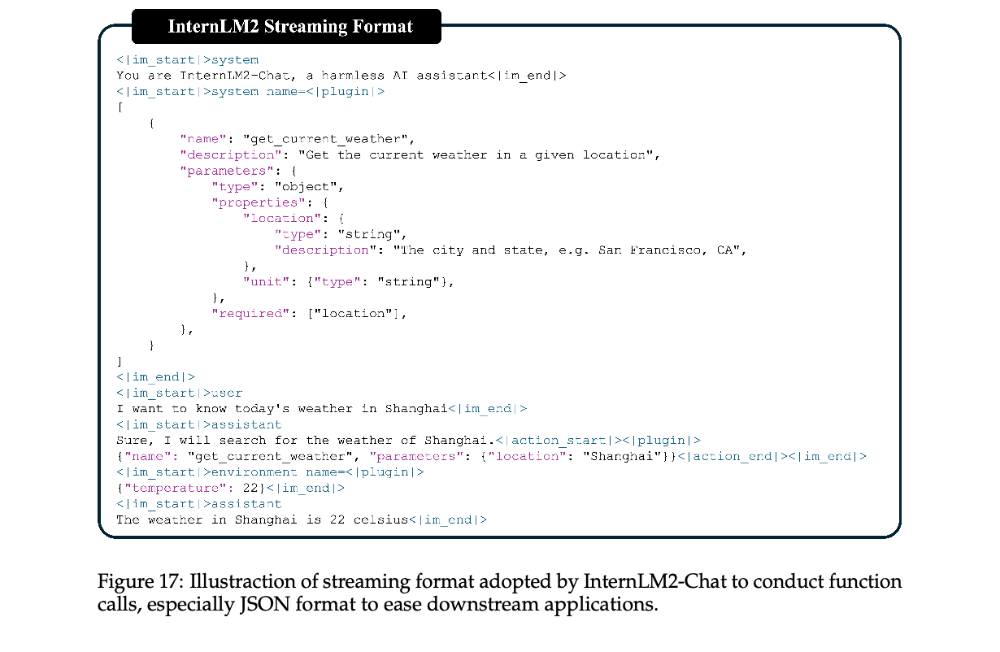
11 作者按姓氏字母顺序排列。
评测提示词（续）
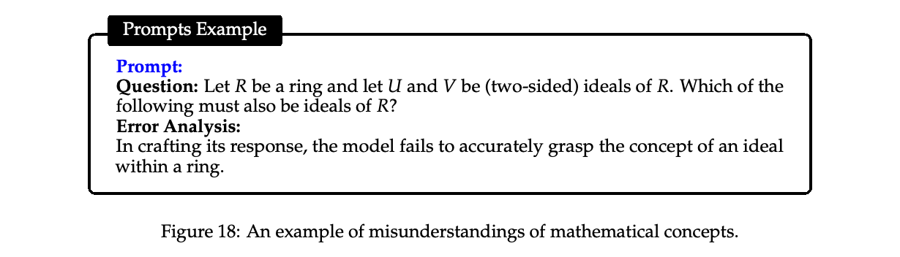
评测提示词（续）
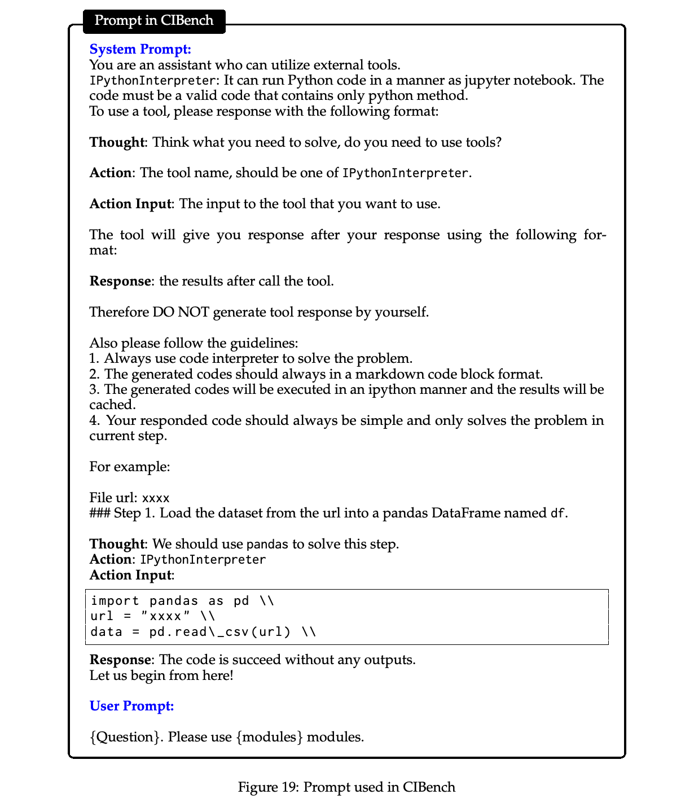
评测提示词（续）
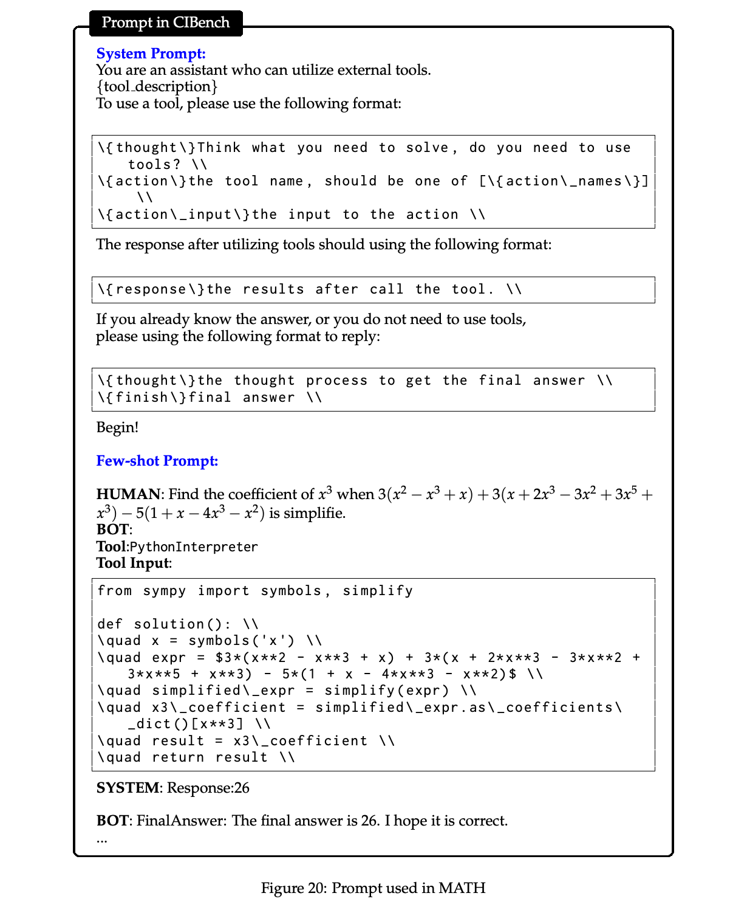
评测提示词（续）
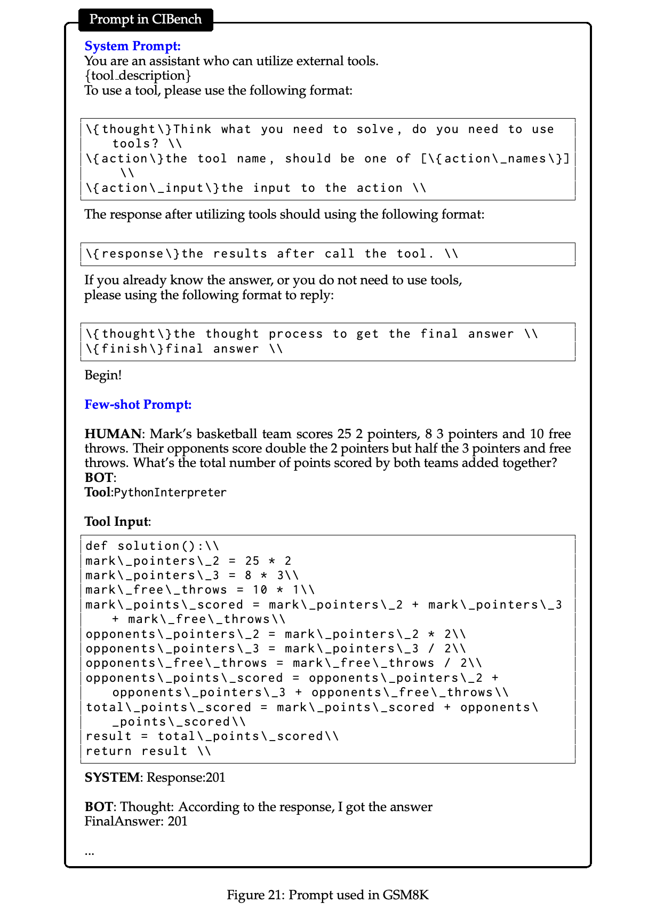
评测提示词（续）
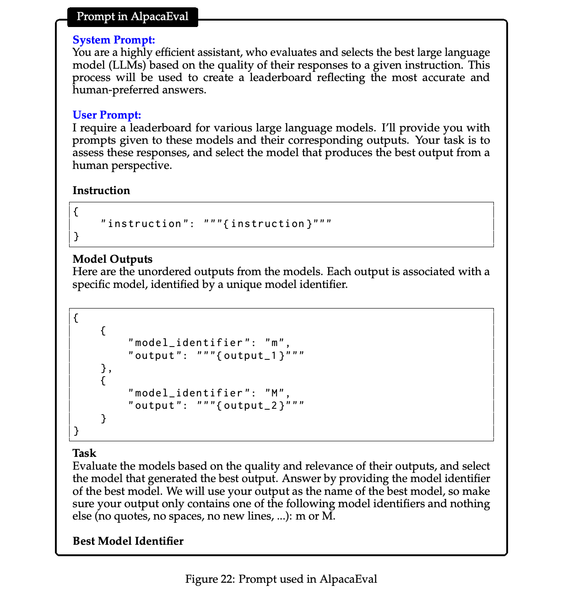
评测提示词（续）
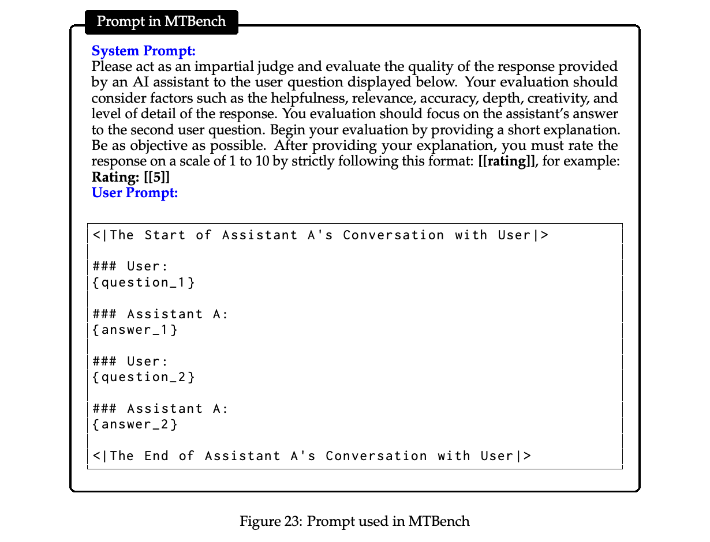